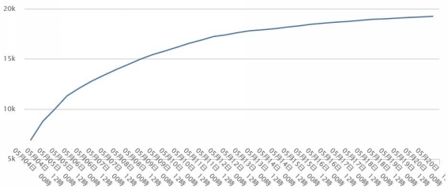
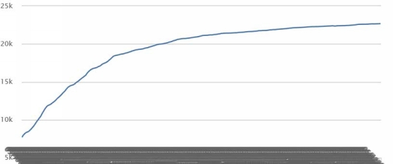
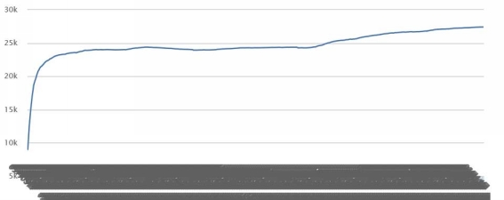
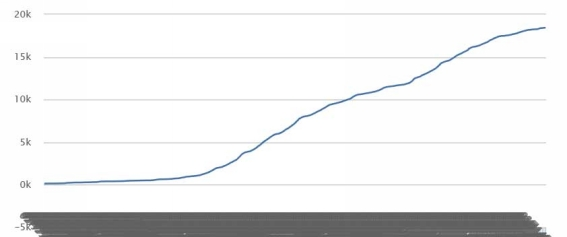
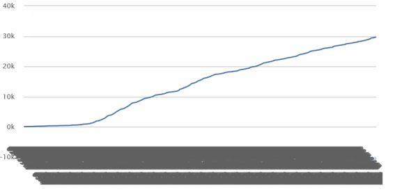
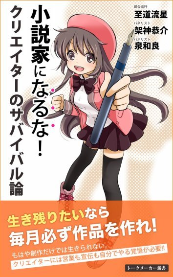
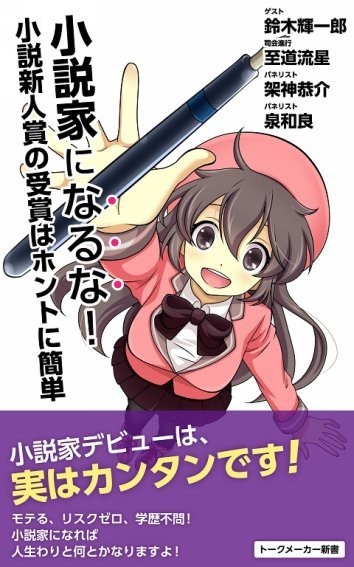

| WEB作家でプロになる！: ②パッケで９割の法則 (トークメーカー新書) | |
| 新木伸 & 三木なずな & 作家Ｋ & 至道流星 | |
| (2017) | |
② パッケで９割の法則
パネリスト 新木 伸
パネリスト 三木 なずな
パネリスト なろう作家Ｋ
司会進行 至道 流星
パネリスト紹介
◆新木 伸 （あらき しん）
キャラクターが大好きな小説家。ラノベ作家歴２５年。
２年前から「小説家になろう」に飛びこんで、連載を開始。
★異世界Ｃマート繁盛記
★四億円当てた勇者ロトと俺は友達になってる
★薪割りスローライフをはじめますか？
★自重しない元勇者の強くて楽しいニューゲーム
......など、４作品、合計１０冊を書籍化。未書籍化連載も多数。
◆三木 なずな （みき なずな）
プロ歴４年。最初の２年間で２冊を出版し、次の２年間では活動場所を「小説家になろう」に移して１７冊を刊行する。おそらく日本で一番、「小説家になろう」に助けられている小説家（？）
◆作家Ｋ （さっかＫ）
小説家になろうで複数作品を連載。４社で６シリーズを書籍化し刊行中。
◆至道 流星（しどう りゅうせい）
小説家、システム開発、会社経営などに携わる兼業クリエイター。
小説、ビジネス書、漫画原作など五〇冊ほどの著作がある。海外翻訳も多数。創作者というよりビジネス色が強いクリエイター。主な著書に、『大日本サムライガール（全九巻）』『羽月莉音の帝国（全一〇巻）』『破滅軍師の賭博戦記』などがある。
もくじ
■第七章 中身がよくても、パッケージの失敗はすべてを無意味にする
■第八章 小説コンテンツがなくなっても、キャラクターコンテンツは未来も続く
この章ではデータを見ながらの分析などを通して、かなりのところまで具体論に踏み込んでいます。どのくらいのポイントを取れば書籍化が見えるのか。タイトルを変えると、数字がどれほど動くのか。その分析手法や取り組みは、まるで株式投資家のようだと感じます。ＷＥＢ小説界の最先端で勝ち残るための知恵を、ここで吸収してしまいましょう。
至道
座談会会場Part5を用意いたしました。
引き続き、Part4の流れでお願いします。
ユーザーさんもご質問などどうぞ。プロ作家や編集者の方も、もし一家言あるようでしたらご遠慮なく参戦ください。
至道
鉄則を最新版に更新します。
■異世界で活躍！
主人公に立てるのは現代人でも異世界人でも、どちらでもアリ。
異世界の定義は、「現実」とルールの異なる世界。辛くて報われなさすぎる現実から目をそらしたい方々のニーズを満たせる、努力が報われる優しい世界。
■人生リスタート！
強くてニューゲームの世界。
■タイトルとあらすじが、ＷＥＢ小説の根源であり、実は最短の「企画書」！
■二〇〇〇～五〇〇〇文字のエピソードに必ずお約束（キモチいいこと！）を入れる！
■ＷＥＢ小説は精神的ポルノである、読者を心行くまで満足させよ！
■描写なんていらない！ 少ない情報量でシンプルな説明をすれば万全！
■今の流行、人気ジャンルで勝負！
■毎日更新！
■ポイントを取るため読者にサービスし続ける。地の果てまでもサービス精神を！
■ランキングから、いっぺん落ちたら諦めろ！
ランキングが落ちてから舞い戻る、なんていうことはまず起きない。次の作品に素早くシフト。
■叩かれても気にするな！
至道
パネリストのお三方がＷＥＢ小説を分析している姿勢は、
「成功しているデイトレーダー」の姿に重なって見えます。
前のほうでもちょっと触れたかもしれませんが、やっぱり相場の世界と似た印象なんですよね。目まぐるしく上下する株価の変動を追い、分析に則って淡々と売り買いをしているようなイメージでしょうか。
至道
もともと自分は、既存の文学界がしたり顔で当然視する小説作法みたいなものが「はあ？」という感じで、心の奥底ではまったく受け付けずにきました。
その異端者だった自分ですら、新木さん、三木さん、作家Ｋさんのお話には衝撃を受けます。だから多くのユーザーさんや業界関係者の驚きは、いかばかりでしょうか。
衝撃を受け止めつつも、晴れやかな気分です。
のっけから「自分たち既存作家は死んでいくんだなぁ」と書きましたけど、死んで当然なんでしょう。多くの書き手さんが対応できず、呪詛の言葉をつぶやきながら消えていくことになるのでしょうね。
時代や民衆が変わったんじゃなくて、ちょっと前までは、権威が業界をコントロールする力を保っていただけだったんだろうなと。数年後にはもう、王様は裸だったとわかるはず。
新木
［オリジナリティの、ヒミツ］
［これと似たようなことをおれも前々から思っていて、編集者ともたまに話したりしてたんですが（「王道、鉄板の、予想できる展開を、ほんのちょっと外した時が一番おもしろい」）、新木先生のようなキャリアのある方に言語化して頂けると、「やっぱりそうなのか！」となりました。］
僕もしばらく前までは、そこでしたよ。
「すこし外す」ぐらいの精度でした。
配合比まで特定したのは、つい最近で。六六％と三三％なんだ、と、突き止めました。
たとえばダンゲロスだと、「学園」「異能」で、ここが手垢まみれの「二」の要素。
そこに「厨二」というのを放りこんだのが、新規性の「一」の要素で。
三つある要素のうち、一つだけが新しい。
完璧な配合比ですよね。だからオリジナリティが生まれたと。
架神
ありがとうございます！ 肝に銘じます。
無論、実地に検証する必要はありますが、これは今後、企画を考えていく上で、一つの指針として捉えていきます。
自分の書きたいものを企画の形で認識した時に、それを構成する要素の割合を考える時に使っていきます。
新木
書籍化ラインの話をします。
いったい、何ポイント取れれば、書籍化できるのか？
「なろう2000」
http://fujitaka.ukauka.net/prg/index/Narou2000/
ここ見てもらうと、視覚で確認できて便利なんですが。
藤孝剛志さんというＷＥＢ作家さんが、個人で運営されているサイトです。
一覧のうちで、サムネイルがある作品は、書籍化済み作品です。
編集さんも、オファーかけるときに使っています。未書籍化の高ポイント作品がすぐにわかります。
サムネイルがないのが、未書籍化作品です。
ざっと見てゆくとわかるのですが、累計二〇〇位ぐらいまでは、ほぼほぼ、すべて、サムネイルがあります。書籍化済みです。
たまにサムネイルがない作品がありますが、それはだいたい「現在出版準備中」か「書籍化不能」な作品です。
二〇〇位を過ぎると、未書籍化作品が、たまにちらほら出てくるようになります。
それでも、五〇〇～六〇〇位くらいまでは、過半数は書籍化している、といっていい状況です。
書籍化作品のほうが少なくなってくるのは、六〇〇位より下。
このあたりを「書籍化ライン」とします。
まとめます。
こんどは「順位」ではなくて、「ポイント」でみます。
六万ポイント以上......ほぼすべて書籍化。
三万ポイント以上......半分くらい書籍化。
――ということで、実際のデータからみて。
六万ポイントが「書籍化確定ライン」。
三万ポイントが「書籍化可能ライン」
ちなみに、一万ポイントを超えたあたりから、書籍化可能性が「〇」ではなくなるのですが......。そのあたりの作品って、実際、出しても売れないし続かないんですよね。ほんと、「出しただけ」に終わってしまう。
なお、このポイント数の目安は、二〇一七年三月現在です。二年ぐらい前であれば、三万ポイントが書籍化確定ラインと言われていました。日々、変わってゆきますので、目安程度に。
オファーが舞いこむラインも、だいたい、現在だと、この六万ポイントが基準です。
そこを超えると、だいたい一社二社くらいからはオファーをいただけるのですが、それ以下だと、待っててもこないこともあります。
すでに他のシリーズで、書籍化済の作家さんだったり、あるいは僕や三木さんのような、もともとラノベ業界でやっていた人間だと、三万以上六万以下の作品は、営業かけて、持ちこむことがあります。
持ちこむっていったって、メールや電話で「このあいだスタートした新連載が三万ポイント超えてるんですけど。よかったら見てください」って告げるだけですが。
企画も実物も、すべて、ＷＥＢ上に公開されていますので、持ちこむといっても、持ちこむものは、なにもなし。
編集さんは一ヶ月をサイクル単位として仕事をしています。
なろうの連載は、めっちゃスピーディーなので、早いときには連載開始から二週間で三万ぐらいに到達してしまいます。
まめにチェックしているつもりの編集さんでも、校了間際だと、二週間とかノーチェックだったりしますし。馴染みの編集さんには、ポイント取れたら、いちおう、報告ぐらいはしておきます。オファーかけてくれるかどうかは、向こうの判断と裁量です。本にして売ったときに、売れるコンテンツかどうかは、向こうが判断すべきこと。
すでに仕事をしたことがある編集さん以外でも、まったく知らないところに飛びこむこともあります。
知り合いのツテで紹介してもらうこともありますし、そもそも、そんなツテなんかなくたって、飛び込みメールやら、飛び込み電話やら、飛び込みツイッターやらで、「○万ポイント作品があるんですけど」だけでアポが取れたり取れなかったり。
フリーで作家業の長い人なら、企画書持って、飛び込み営業をしたことがあると思います。
飛び込み営業で企画書を持っていったときの、あの針のむしろ状態よりも、ＷＥＢ小説を持ちこむときは、遙かに有利です。
「○万ポイント」、それ自体が「実績」となりますので。
ここの「○万」のところが、「一．五万」だと、針のむしろのままで。
「三万」だとわりとお互いにとっていい話という雰囲気で。
「六万」だとぶっちゃけ、なんでまだ手つかずなの？ って感じで驚かれたり。
まあ「六万」あれば営業かける必要はあんまりないんですが。泰然とオファーを待っていて、地道に連載つづけて原稿のストック増やしていればよい。
新木
［ポイントはどこまで伸びるか］
一週間の連載で、ポイントがどこまで伸びるか、わかる。――という話題が、さっきからしきりに出ていますが、その根拠と説明は、こちら。
僕の「異世界Ｃマート繁盛記」のポイント推移のグラフが典型的でわかりやすいので、ＪＰＧを貼り付けてみます。

新木
こちらは、連載開始がちょうど五／一なので、三週間分ですね。
データを画像でなくて見られる場所はこちら。前述の「なろう2000」に「グラフ」とありますので、そこから見れます。
「Ｃマート初期三週間ポイント曲線」
http://fujitaka.ukauka.net/prg/index/Narou2000/graph?from=20150501&to=20150520&ncode=N6170CQ
注目すべきは、ちょうど一週間経った五／七の時点。
この日の時点で、すでに、グラフの曲線の終端点が、だいたい、どの高さにくるのか、推定可能です。
もうアーチが見えてきていますので、二〇Ｋか、そこをちょっと超えたあたりで、平行になるだろう。――と、読めます。
ちなみにこちらは、僕のもうひとつの作品、「自重勇者」のほう。
自重勇者（Ｃマート類似区間）
http://fujitaka.ukauka.net/prg/index/PointHistory/graph?from=20160508&to=20160523&ncode=n0138dh

新木
だいたい、似たような曲線です。
こちらも、やはり一週間時点で、二〇Ｋは軽く超えて、二五超えるかどうかかな？ ――と、推測できます。
実際には、二五Ｋ手前で集束しました。
ちなみに全体グラフはこちらで。
自重勇者（全体グラフ）
http://fujitaka.ukauka.net/prg/index/Narou2000/graph?from=20160504&to=20170314&ncode=N0138DH

新木
てなわけで。
ごくごく初期の、一週間程度の初速段階で、もうすでに、どこまで伸びるかの終端ポイントは判断できる。
という話でした。
ちなみに、自分の作品でなくて恐縮ですが。
三木さんの最新作のグラフがこちら。
三木なずな「レベル１だけどユニークスキルで最強です」
http://fujitaka.ukauka.net/prg/index/PointHistory/graph?from=20170225&to=20170314&ncode=n2224dv

三木
新木先生ありがとうございます（笑）、改めてグラフみたらいい事例にみえますねこれ。
というわけでグラフが出たので解説しますと、最初の三分の一くらいまったく伸びてませんよね、これが「だめなタイトルとあらすじ」だった頃で、途中からグラフが急に上昇に変わったのは現在のタイトルに変えたからです。ちなみにあらすじは前のままでした。
内容はまったく同じ事をやってて、その内容を説明するタイトルを変えただけです。ちなみにこれも自重勇者とおなじ、二五〇〇〇前後までかな、と推測してます。
さらに細かい事をというと、こちらのケースでは、〇近辺でまったく伸びていないダメだった期間に「企画」は三回ほど変えてます。
つまり「タイトルとあらすじ」が四セット、企画書だとしたら四回分見てもらった事になります。
そして期間はポイントが伸び出すまで一週間！
企画の手直し含めて四回分見てもらって、ある程度書籍化可能な企画にたどりつくまで一週間しかかかってないのです。
企画書やプロットを編集の方に四回も見てもらうことを考えたらとても一週間じゃ無理ですよね（汗）。
新木
現在ポイント数は一八五〇〇ぐらい。
現在の曲線では、二〇Ｋは超えるのは確実。
ランキング位置は、日間週間で七位。月間で一〇位。おそらくもう上がらず、下がってゆくだけ。
現在の文字数は七五〇〇〇文字。文庫だと一冊一二万文字ぐらいなので、六割程度。
というデータを踏まえて検討すると、続行するかどうかは、微妙なところ。
二万ポイントだと、なんとか書籍化できないこともないんですが......。大判に持ってゆくしかなくて、よくて二冊目で終わります。大判だと一冊一四万文字くらいなので、二冊分として、二八万文字－七・五万字 ＝ 二〇万字ぐらい。
残り二〇万字を書いて、売れない二冊を出して、若干の現金化をして終えるのか。
それとも、その二〇万自分の執筆リソースを、新作三本に割り当てて、もう三回チャレンジしてみるか。（七万文字で一チャレンジだから、二〇万字で三回チャレンジできます）
どちらも選択としてはアリだと思います。ちょうど、めっちゃ悩むラインなんですよね。このあたりって......。
......って、人様の作品を、なに勝手に決めつけているんだ、って話ですが（笑）
これはデータと数字の話なので、誰の作品だろうが、客観的に話せる部分はあるわけです。
もちろん自分自身の作品のときにも、同じようなデータを同じように分析します。
書籍化するか（オファーがもし来ても断る）、それはやめておいて、次にゆくのか......。
すべてデータと数字で決定します。
新木
［三木さん］
いや。二五Ｋいかないっしょ。二〇Ｋどまりの曲線っすよ。
（※座談会後追記）
新木
記事編集時の最新データの追記です。
僕の予想も、三木さん自身の予想も外れて、二五Ｋを越えて伸び続けています。現在（二〇一七／三／二六）時点でも曲線のカーブは見えず「直線」のまま。
原因は月間ランキング一位に長いこと滞留していたため。ポイント源は「月間ランク一位はこれか。見てみよう」と流入してくるアーリーマジョリティ＆レイトマジョリティあたりの読者層と推測されます。
現在、ポイントの伸びが「直線」のままなので、どこまで伸びるかは、わかりません。この形になっているとき、僕らは「予想」をしません。
「後期ブクマ読者」（後述）を獲得できるモードに入りました。

架神
［というわけでグラフが出たので解説しますと、最初の三分の一くらいまったく伸びてませんよね、これが「だめなタイトルとあらすじ」だった頃で、途中からグラフが急に上昇に変わったのは現在のタイトルに変えたからです。ちなみにあらすじは前のままでした。］
［内容はまったく同じ事をやってて、その内容を説明するタイトルを変えただけです。］
これも......素晴らしいですね......！
動画の話ですが、第三回座談会で「全く同じ内容なのに七〇〇万再生と一〇〇〇再生の差が付いた」という話があったんですよ。
実際問題として、何が売れるのかよく分からなくて、同じくらいのエネルギーをかけて同じくらいのクオリティの本を作っても、売れる時と売れない時がありますよね。
そこに何か秘密があることは薄々分かっていながらも、掴めないわけじゃないですか。
だから「出してみるまで分からない」という話になるわけで。
しかし、みなさんは、「タイトルとあらすじ」というところまでは目星を付けている。
少なくともなろうにおいては、その実験が成功している。
これは単に「なろうからどうやって書籍化するか」というだけの問題ではない、何かもっと大きな問題解決へと繋がる端緒のような、そんな気がしています。
すごく............興味深いです！！！
泉
［なずなさんのグラフ］
うわーこれ凄いですね。新木さんとはまた全然違う所が。
そして、上昇するきっかけとして、タイトルを変えただけで変化があったという事実が、お話されてることの確かな裏づけとして、これまた凄い。
なろうで書いてらっしゃる一般ユーザーの方々には既にこうしたことは常識なのかもしれないですが、改めてこうした情報が皆さんの口から出るのを見ただけで、俄然やる気出てきた、っていう人もいるんじゃないでしょうか。
架神
［新木先生］
［そこまでどうやって初期衝動を保つのか、なんていう話をしているわけですが。］
これに関してはたぶん新木先生は良い意味でプロとしての自覚がありすぎて、ちょっとアマチュア寄りの感覚が薄れているのではないかと思います。
アマチュア的には、どうやって初期衝動を保つのか、ではなく、完結するまで初期衝動が持続するような作品を書く、という感じです。
なので七日試してウケなくても続けるし、頃合いを見て完結させるということもないし、完全に採算度外視で、自分が満足するまで書き続けます。
というのは、そもそも創作を始めようとするのには巨大なエネルギーが必要でして、新木先生はキャリアが長いので息を吸うように作品を書き始められると思いますが、普通はそうではないわけです。
走り出すためには今から生み出す自作に対する重すぎる愛が必要で、七日口説いてダメだから諦めるとかじゃなくて、何度振られようとストーカーじみて一生つきまとうくらいの偏執狂的な痛々しい想いが要るのだと思います。
だから、「七日試してダメなら諦める」というのは、アマチュア寄りの人にはむしろびっくりする話かもしれません。「七日口説いただけで諦めるとか、お前、その女のこと、本当はそんなに好きじゃなかったんだよ」みたいな。
そういう視点から皆さんを見れば、やはり「自分を殺して売れるものを見てる」という見方になるかと思います。
「初期衝動の重さ」が違うと言いますか、純愛が重すぎて痛々しいと言いますか。実際はそこに折り合いを付けて、生活を成り立たせるのが「本当のプロ」だと思います。中学生じゃあるまいし、女の子だって七日口説いてダメなら諦めますよ、普通は。それが大人になるってことです。
............でも、実はおれはそういうのがあまり好きではないので、早く金を稼いでアマチュアに戻りたいと思ってたりします。
新木
［架神さん］
［初期衝動の話］
「初期衝動」というからには、中期衝動も、後期衝動も、あるわけですよね？
僕の言っている手法は、初期衝動を保とう、なんて節約思考をしてないで、まず作品に、ドバっとぶちまけちゃえばいいじゃなーい？ って話です。
初期衝動なんだから、七日間ぐらいは持続すると思われます。
だいたい、アマチュアの執筆っていったって、最初の七日ぐらい夢中で書いたら、あと、何週間も何ヶ月もうっちゃらかして、また思い出したようにモチベをかき集めて、書いて、また中断して、......なんていうことを繰り返して、ようやく長編一冊を一年掛かって仕上げるとかじゃないですか。
その間、執筆に苦しんでいる自分に酔っているのが、アマチュア作家のスタイルだと、僕は長年の観察から理解していますが。
小説道場、十数年やってきて、何十人っていうアマチュア作家と接してきましたので。
そういう一連の行為をもって、なにやら高尚なものと祭り上げるのは、なにかおかしいぞ、と。
欺瞞があるぞ、と思うわけです。
ＷＥＢ連載だと、七日やれば、読者がついてくれるんです。それをファンと言い換えてもかまいませんが。
初期衝動の枯れ果てる七日目あたりで、
「実際に読んで愉しんでくれている人たちがいるんだ！」という気持ちが、中期衝動を生み出して、執筆を持続させてくれます。
ポイントが取れていけば、こんどは、「書籍になって、万人単位に読ませられる！」ということが、後期衝動となります。
初期衝動、中期衝動、後期衝動――と、ずーっと創作への衝動が持続して、作品を、書き上げることができます。
たったの一ヶ月で。あっけなくエンジョイしながら。楽しみながら。
こちらの取り組みかたで創作するほうが、僕には、「初期衝動を尊重している」と思えるんですけど。
完結するまで初期衝動を保つ、と言われますが――。
何日保つんですか？ そのあいだ実際に書いている日は何日ですか？
一日どのくらい書いているんですか？
実際には書いている日は異常に少なくて、うんうん唸って、モチベを高めるのに必死になっているだけなんじゃないですか？
それは本当に作品の創作衝動に対して、真摯な態度なのですか？
短時間でこの世に生み落としてやることが、作家として、作品にしてやれる、最大の祝福なんじゃないですか？
長いことかけて（そのあいだほとんど書いてなくて）、産み落とすのが、なぜ、高尚になるのですか？
作家が苦しみ抜くことと、作品とは、まったくの無関係ですよね。
苦しんで書かれた作品でも、楽に簡単にちゃちゃっと書かれた作品でも、作品は、それ単体で評価されるべきで、作家なんぞの産みの苦しみなどとは、まったくの無関係のはず。
架神さんが、「長いことかけていて、そのあいだ、じつはほとんど書いてない」という部分がありますが、ここは、ちょっと決めつけかもしれません。そうでしたら、すいません。
ちなみにアマチュア作家の多くがそういう創作スタイルなのは、これは事実で、僕は「知っています」。
小説家として、作品を生み落とす子育てをしているわけですが――。
作品は苦しんで産み落とすべき、という論には辟易としていまして。
「出産」という行為自体に、難産も安産も、貴賎なんてないはず。
そのうえで――。強いて、どちらがいいのかと問うのであれば――。
作品のことを思えば、むしろ、安産のほうが、どう考えたっても、いいでしょう。
現実の「出産」だって、そうですよね？ 選べるなら誰でも安産を選びますよね？ なぜ創作行為だけが、難産のほうが有り難がられるのですか？ まるでわけがわからない。
架神
［だいたい、アマチュアの執筆っていったって、最初の七日ぐらい夢中で書いたら、あと、何週間も何ヶ月もうっちゃらかして、また思い出したようにモチベをかき集めて、書いて、また中断して、......なんていうことを繰り返して、ようやく長編一冊を一年掛かって仕上げるとかじゃないですか。］
なるほど......。これは確かにその通りですね。
モチベを「かき集める」という表現はしっくり来ますね。
おれも確かにかき集めてます。
［「実際に読んで愉しんでくれている人たちがいるんだ！」という気持ちが、中期衝動を生み出して、執筆を持続させてくれます。］
あー。
これに関しては前に思ってたことがあって。
「ツイッターで原稿書こうかなあ」って思ってた時期があったんですよ。
普通にツイッターで書いてそのまま放流する。
「即座に反応が欲しい」と思う気持ちはやっぱりありますね～。
実際は、出版社との絡みもあるし、ツイッターに投下したのをコピペして原稿にするのも面倒くさいのでやれなかったんですけど、この点に関しては非常に納得できますね......。
新木
［実際は、出版社との絡みもあるし、］
これは、そんなもんない！ ――と、うそぶきたいところではありますが、たしかにありますよね。
ラノベの業界だと、ここ二年ぐらいの、「ＷＥＢ小説は売れる」という成績によって、だんだん緩和されてきていまして......。
結局、「無料で読ませちゃったら、本が売れない」という恐れから来る忌避感だと思うんですよ。
でも、現実に、無料でＷＥＢで公開されている作品が、ヒット作品として、バンバン売れている。ＷＥＢ連載版もまだ残っている――っていうか、ＷＥＢのほうが先行して掲載されていて、全話、残っているにも関わらず......。
そんなことまったく関係ないかのように、売れまくってる。
......ので、「無料で読ませていたら本が売れない」というのが、迷信であると言わざるをえなくなってきました。
だいたい、その認識が広がりつつあります。
現実がそうなんだから、否定してたって、はじまらない。って感じ。
ただまあ、長いこと続いた因習の影響はあるわけで、正当な理由はないんだけどなんか嫌だなぁ、ぐらいの編集さんは多いかも？
僕なんか、そろそろ、書き下ろしの仕事はなくせるんじゃなかろうか？ ......と思っていたりします。
連載同時じゃなきゃ、書きません。――というのが、そろそろ、通じるかなと。
一緒に仕事する編集さんも、「ＷＥＢ露出！ おんもしれー！ バンバンやってきましょう！」っていうイノベーターの人と組むことが多いですし。
もうね。だめなんですね。書き下ろしだとモチベあがらなくって――。
書いたぶん、その日に投稿して、みんなに見せていないと。
なんで、「読んでもらってキモチヨクなること」を、何ヶ月も一年も、我慢しなきゃならないのか。
その「我慢」は誰かの得になるのか？ とか考えはじめちゃうと、もうダメ。
なのでいまは、毎日の執筆を、三シリーズぐらい同時に入れてまして――。
そのうちの一本は、必ず、「ＷＥＢ連載」のものにしています。
三本すべてが書き下ろしだと、モチベかき集めるために、多大な時間が必要で――。そこは「無駄」だと思うので。
せめて一本がＷＥＢ連載であってくれれば、モチベがなんとか保てますんで。
架神
［僕の生涯打率って、二五％ぐらいなんですよね。］
［出版したシリーズの七五％は売れてない側に入ります。］
［ＷＥＢ小説で先行テスト済みの作品は、どれもきちんと売れてます。いまのところ一〇〇％。］
これが一〇〇％になるのはすごいですね......。
色んな人に聞いても大体打率三割前後なので、そこの壁は一部の天才以外には超えられないのかと思ってましたが。実験を経ることで、実際に出版した時にそこを一〇〇％にすることができるなら......そりゃあ、出版社は飛びつきますね。
新木
ですから、僕も打率二五％ですってば。三割届いてないですってば。
書き下ろしで出しても二五％。なろうで連載しても二五％。
なにやったって、四本に一本しか、当てられません。凡才中の凡才です。
しかし凡才程度の能力は持っているので、なろうで四本やれば、一本くらいはヒットになります。
そのヒットを書籍化するんですから、当然、あたりまえのように、爆死しない程度には売れます。
これは僕に限ったことではなくて、なろうの高ポイント作品全体に言えることです。
例外はもちろんありますが、八割ぐらいは、高ポイント作品＝ヒット、の結果が出ています。
文芸とかのほうだと、ハードカバーでヒットした本は、文庫化したりしますよね？
その際に、ハードカバーで売れていた本は、ほぼ一〇〇％に近い相関率で、文庫でもヒットしますよね？
それとまったく同じことなんですが。なんの不思議もないように思えます。
むしろ相関率が一〇〇％に近くならなかったら、おかしいし、不思議だし、異常ですし。
一般ユーザーＨ
かがみ先生にピンポイントで身もふたもない質問なんですが、「講談社がだしてくれないから自分で出すわ！」って言ったダンゲロス1969って、結局どのくらいの収入になったのでしょうか？
自分は近々本を出す予定があります。
自分の中ではヒット作になる予定なんですが、もし打ち切りになったら自分でイラストレーターさんを雇って販売しようかなー、とも考えています。
それでかがみ先生の売上を参考に聞きたいのですが、結局いくらぐらいになったのでしょうか？
発売三ヶ月で五五〇部ぐらいになった、というのはインタビューで拝見させていただいたのですが......。
架神
［一般ユーザーＨさん］
『小説家になるな！ クリエイターのサバイバル論』をご覧下さい。
https://www.amazon.co.jp/dp/B06XMYHF8D
こちらの巻末付録に売上が書かれていますよ（ニコッ
一般ユーザーＨ
［かがみ先生］
ありがとうございます！！
ちなみにタイトルドリームですと、「黒の召喚士～戦闘狂の成り上がり～」という作品がすさまじいですね。
これは「古今東西召喚士」というタイトルで半年近く連載。
しかしポイントは二五〇〇程度っていう作品だったんですが、タイトルを変えた途端に伸びを見せ、一ヶ月で五万。今では一〇万ポイントを超える人気作品となりました。
自分はこの作品がうらやましくってタイトルを何度も変えてみたけどダメだったりはしましたが、「そういうこともある」っていうところではありますね。
新木
［一般ユーザーＨさん］
発売前から打ち切り後可能性や、その後の展開を語るのは、商売の仁義としてどうかなと。
売れないなー、と思っていたとしても、そこは、ウソでも「渾身の一作です！ 傑作です！」と言うものではないかと。
僕がもし編集者の立場だったら、発売前から「この本売れねー」なんて騒ぐ作家とは、二度と仕事しませんけど。
また、いちど商業に乗った本は、出版社をビジネスパートナーとして巻きこんでしまっているので、著者であっても、そうそう自由にできるものではないかと。
シリーズの続編を個人で売るときには、一巻なり何巻目かまでが、商業ベースに乗っているわけで......。そこで宣伝費やら掛かっているわけですよね。
イラストレーターさんも、仮に同じ方にやっていただくのだとすると、その人の発掘や選定にも、編集さんの「お給料」という形で、経費がかかっているはず。
新刊発売にあたって、ＷＥＢに宣伝ページも作ってもらっていますし。折り込みチラシが印刷されて、同時期の各本に差し込まれていますし。どこかの駅にポスター貼られているかもしれないし。雑誌にページが出てるかもしれないし。ひょっとしたら、ＣＭで流れているかも？
かなり宣伝活動に経費がかかっていますよ。
それら出版社が経費を使った上で、得られた作品の知名度を利用して、続編を個人で売って、自分だけ儲けるという商売をする場合には、相手方にきちんと説明し、了承を得て、筋を通すべきだと思います。
そうでなければ、出版社の宣伝インフラにタダ乗りしているアンフェアな相手、ということになり、信用を失って、今後、ビジネスをやってもらえなくなるかもしれません。
架神さんの場合には、一冊きりの単行本で、かつ、「出せない」と出版サイドが明言しているものですし。これはセーフかグレーの案件かと思います。
まだ商売として動きはじめる前に引き上げたわけです。
一般ユーザーＨさんの場合には、明らかにアウトで、出版社に対して、不義理を働いてしまう案件に見えるんですけど......。
そこは、だいじょうぶですか？
老婆心ながら。
架神
おれの場合は講談社と話し合ってＯＫもらってますね。
向こうも「ごめんねー」っていう感じだったので、ここはさっくりＯＫ出ました。
一般ユーザーＨ
［新木先生］
基本的には、ヒット作になる予定なので大丈夫です！
ただ何事にも万が一はあるので、念のための保険＆自分の精神安定のために考えるだけは考えておく、という感じですね。
架神
［一般ユーザーＨさん］
きっと......売れると信じてるけど......。
いろんなことがある業界だからね......。
ダメでもヘラヘラっと次を書いてね......。
新木
［商品は売り方が九割］
［タイトルを変えただけで、売れないものが、売れるようになる］
「カレイの縁側醤油煮込みという商品がありまして。
Before
http://www.forest.co.jp/forest/goods/images/p/598856.jpg
After
http://line.blogimg.jp/shinoharatomoe/imgs/5/c/5c8f52eb-s.jpg
中身はまったくおんなじで、パッケージだけ、変更したそうです。
そしたらバカ売れ。
もともと美味しかったらしいんですけどね。
でも缶詰の「美味しさ」って、食べないとわからないじゃないですか。
「買う」って消費行動は、食べる前に起きるものなので、「美味しい」ということは、「買う」という行動が起きるときには、まったく、意味をなさないのです。
新しいほうのラベルは、いかにも「おいしそう」に見えます。
つまり「買う」段階で必要なのは、「おいしそう」であって、「美味しい」ではないということ。
小説も缶詰と同じです。
買って、うちに持ち帰って、開けてみるまで、中身の「美味しさ」なんてわかりませんので......。
だいたい、ラノベって、かなりの書店で、シュリンクされていますので......。物理的に「味見」ができなくされてますし。
だからパッケに必要とされるのは、「おいしそう」ってほうです。
これって飲食店などにも同じことが言えまして......。
どの店に入ろうか？ と悩んでいるときには、実は、店の「味」なんてものは、判断材料に加味されません。
食べてないんだから、味なんて、わかろうはずもない。
店構えだったり、「おいしそうな気がする」という直感だったりするわけですね。
新木
「小説は中身で勝負」なんていう幻想が、世の中にまかり通っている気がします。
ＷＥＢ小説でも「中身こそ最重要」なんて考えている人たちがいます。
あるいは小説の選考。「中身」を読んで選考していますよね。
あれ、そもそも、おかしいんですよ。
「売れる商品」としての小説を選ぶなら、中身ではなくて、企画で選ぶべき。「この企画には売れそうなパッケを取り付けられるか」のほうで選ぶべき。
もちろん、中身なんてどうでもいい、なんてことは言っていません。
「中身がいい」ということは、売れる、売れない以前の、単なる「最低条件」でしかなくて――。
じつは売れ行きの九割ぐらいを占めて、支配的、かつ最重要な要素は、「パッケ」だということです。
いま世の中、その次元に移っちゃっています。しかし作り手側の意識は「中身が良ければ売れる」のままで止まってしまっています。
「良いものを出せば必ず売れる」なんていう、現実とはかけ離れている「間違った法則」を信じて行動しちゃっていると、あちこち、おかしなことになってきます。
中身の善し悪しの影響というのは、じつは、かなり小さくて――。
どんなにいいパッケをつけても、中身が悪ければ、さすがに売れない。
――と、そうした程度。
中身が、そこそこ普通か、あるいは、中身が普通よりも良ければ、あとはパッケの力です。
前述の飲食店の例え話になりますが――。
すごく美味しそうに思えるお店があったとします。
その店に入ってみて、実際に食べてみたら、味もそんなに悪くなかった。並かそれ以上はあった。
そうしたら、そのお客さんは、まあ満足して帰りますよね。
その店は普通に繁盛します。商売として成立します。
これが、「すごく美味しそうだったけど、ゲロマズだった」だと、二度ときません。
または、「すごく美味しくて、すごく美味しかった」であれば、大繁盛します。
だけど、「すごくマズそうな店」であれば、料理の善し悪しなんかにかかわらず、閑古鳥です。
そもそも、食べてもらえていないんだから、客のつきようがない。
「すごくマズそうな店構えなんだけど。じつはすごく美味しかった」という店を、わざわざ出して、そこで勝負して勝つことに、なんの意味があるのか。
美味しそうな店構えにすれはいいじゃないですか。タイトルだけ。あらすじだけ。あと書籍であれば、表紙の絵とデザインだけのことです。
わざわざ小汚くて、マズそうな店にしなくたって......。
そして肝心の中身のほうは、ほんとに美味しいものでもいいし、あるいは普通に食べられる程度の料理を出していれば、いいじゃないですか。
「私は内面を見てもらいたいから、おシャレしないんです。服にも気を使わないんです」――なんてやってて、モテるはずがない。どっちも磨いたらいいじゃないですか。内面も外面も。
至道
こちら長くなってきたので、そろそろ締めますね。
この流れのまま、Part6のほうへお願いいたします。
ここで語られる各種のテクニック自体が面白く、まるで小説のようだとすら感じます。出版社という機能が弱くなり続けている昨今、今後ますます小説家は、自分で自分をＰＲしたり、自著を販売していくことを強いられるようになるでしょう。そんなときに、いま最先端にいるＷＥＢ作家の方々の分析に取り組む姿勢には、ただただ目を見張るばかりです。
小説家は個人事業主であるという視点を忘れないようにし、今のうちからマーケッターとしての経験を積み重ねていく必要がありそうです。
至道 流星
■Tips
◆ＷＥＢ小説で勝つためには、成功しているデイトレーダーのように日々変動を追い、分析し続ける姿勢が必要。
◆王道、鉄板の予想できる展開が六六％、予想を外す展開が三三％。これが「オリジナル」を生み出す完璧な配合比。
◆小説家になろうでは、ポイントによって書籍化のラインが明確に分けられる。
◆ポイントの分析を心掛けよ。
◆伸びが悪ければタイトルを変えていく。
◆中身は同じでも、パッケージを変えれば売れ行きは変わる。
◆小説は中身で勝負など嘘である。
◆缶詰でも店でも小説でも、成功を勝ち取るのに、中身の良し悪しの影響はかなり小さい。
◆ＷＥＢ投稿者は、創作者であるだけでなく、デザイナーであり広報マンであり経営者でであることが必要。
本章タイトルズバリそのものが、本座談会の本当の核心です。これまで散々見てきたように、小説家になろうで高ポイントを獲得すれば、かなりの確率で書籍化することは可能です。それゆえ本書で謳われた鉄則を守れば、ほとんどの方に書籍化のチャンスが巡ってくることでしょう。
そして本章では、小説家になろうで高ポイントをマークするためのチェックポイントを、さらに深く議論していきます。
至道
Part6会場を用意しました。
前の流れのままどうぞお願いいたします。
一般ユーザーＦ
Part2あたりで「新着からどう這い上がるか」的なことを質問させて頂いた者です。遅くなりましたが、お答えいただいた皆様ありがとうございました。
僕はなろうにもまったりと投稿しつつ、しかし新人賞への応募に軸足を置いて動いている人間なのですが、ここ最近はＷＥＢでの活動も平行してやりたいなぁと考えていたので、ここでの議論はまさにタイムリー、ありがたいです。
特に、
［「いっぺん落ちたら諦めろ」］
というアドバイスはとてもありがたいです。
新人賞への投稿の場合、これをプロット段階で一人でやっているところを、ＷＥＢでは多数の目で判定してもらえる、ということのメリットを改めて考えさせられました。分かってはいたはずなんですけど、ついポイントもアクセス数も伸びないと、「けっきょく誰も見てないじゃん」ってふてくされそうになるので。それも含めて「企画が弱い」と割り切る姿勢が必要なのでしょうね。
ＷＥＢ投稿って、創作者であるというだけではなくて、デザイナーであり、広報マンであり、経営者でないといけないのかな、というふうに思っています。ただ中身が良いモノを提供すればいいだけではないのだと。もちろんＷＥＢに限らず必要な感覚ではあるのでしょうけれど、よりその必要性が高いような気がします。
新木
［一般ユーザーＦさん］
なろう的なもの（異世界ファンタジー・人生リセット小説）を書くのでなければ、カクヨムという選択肢もありますよ。
なろうで、どのくらいのポイントを取られているのかわかりませんが。
一〇〇とかそれ以下であるなら、なろうよりも、カクヨムのほうで書いていたほうが、読者が多くなるかもしれません。
読者っていうか、あそこには純粋な読者というものは少なくて、皆、書いてる側の創作者なんですけど。
ジャンルが異世界ファンタジーで固定していなくて、ほかも、いくらでもありますし。
創作者サークルみたいな感じがあって、アマチュア時代に経験していた、懐かしい感じがありました。
なろうのほうは、特に日間上位なんていうのは、完全にプロなんですね。
そこらのプロよりもプロ意識を持った人間が鎬を削りあい、商業水準以上の作品がタダで読めるので、消費者（読者）も山ほどいます。
んで、完全な読者というのは、優しくないんです。なにしろ消費者なもんで、ちょっと気に入らないと、クッソミソに酷評です。
自分も創作する側の人間のほうが、自分が言われたらどう思うか？ ――と考えられるので、思いやりがあります。
一般ユーザーＦ
新木先生、ありがとうございます。
なろうのほうでは、現代ものの日常コメディをダラダラっと続けて七〇〇ポイントくらいです。これも毎日更新していたときの伸びが良かったので、ここでの議論を改めて噛みしめているところだったりします。
［カクヨム］
［あそこには純粋な読者というものは少なくて、皆、書いてる側の創作者］
まさにそんな感じですよね。なのでフルメタの二次創作をちまちまやってました。
あまり創作者同士の馴れ合い的な空気が好きではないので、なろうのランキングでゴリゴリ戦ってみたいという闘志がわきつつ、取りあえずここでアドバイスのあった「月間トップを観察する」から始めてみたいと思います。
ところで、至道先生から「今後はトークメーカーも狙い目」という趣旨のコメントがありましたが、先生方の中で、他に注目しているサイトなどはありますでしょうか？ やはりまだしばらくは「なろう」の天下が続きそうでしょうか？
一般ユーザーＦ
連続してすみません。
先の投稿で「創作者同士の馴れ合い的な空気が好きではない」と誤解を生みそうなコメントをしましたが、「褒め合うだけの関係が好きではない」の意ですので念のため......。
至道
［至道先生から「今後はトークメーカーも狙い目」という趣旨のコメント］
自分が利害関係者の一人なので、営業的・宣伝的に思われないように正確なところを捕捉しておきますと、
書いたように現在のトークメーカーは
アクセス数の多さに比して、まだ作品数が追いついていない
という状況になっています。
これは色々な理由があるのですが
（一）リリースして三カ月すら経過していないため作品数の伸びが後付けになっている
（二）アイコンというハードルがあるため、皆さん作品投稿にまだ少し慣れがない
等々、いろいろな要素があろうかと思います。
そのうえで今後は
アクセス数＝作品数
となる可能性もありますし、
アクセスの増加数よりも、作品数が遥かに多くなる
のほうに振れてしまう可能性もゼロではありません。
だから、今後のことは保証できません。
あくまでアクセス数のほうが、現時点では作品数に比して過剰な状態なので、どんな方でも最初に新着に出れば数百のアクセスが出る状態にあるということです。この状況が知れれば、ややもすればすぐに変わる可能性があります。
また、スマホユーザー割合が非常に多く出ているので、ちょっと他の小説投稿サイトとはユーザーさんの動き方が違っているので、単純比較もできないかもしれません。スマホユーザーさんは基本的に求めるページにアクセスするだけで、それ以外の複雑な動きをしないように感じています。
至道
書かなくてもわかるかと思いますが、トークメーカーのアクセス数自体はかなり堅調です。もともと半年間は開発主体で取り組もうと悠長に構えていましたが、プレスリリースを一本流したところ、それで業界的に名前が広まってしまったので、やや前のめり気味に、一カ月前ほどに一定の広告予算を割きました。
もともと名前が浸透していたこともあり、アクセスは伸びてきています。ただ、作品数が追い付いていない状況により、上述のような現象になっているわけです。これは事業初期だけに見られる現象かもしれず、今後の推移については保証できかねます。
至道
また、トークメーカーは新着でアクセスが数百出る状況ということは、とくにジャンルなども今は何でもアリの状況になっています。先だって指摘した架神さんの数時間で八五〇アクセスというものは、作品というものですらなかったかもしれません。
そういうわけで、なろうでは当然まったく相手にされず、カクヨムでも難しいような何か特殊な方向の作品であれば、あくまで「現時点では」ですがトークメーカーは適している場になるかもしれません。
至道
またトークメーカーの投稿作品には、ぼくにもオファーが来ましたし（実は二本来ました。そのうち一本は架神さんと一緒に企画化する予定です）、これは別に自分が作家だからというわけではないと思われます。さまざまな関係から、関係者の来訪率は非常に高いサイトになってしまったと思います（想定していませんでした）。
各投稿サイトにはそれぞれの文化があり、とりわけトークメーカーは先鋭的なものになっていますから、編集者や業界関係者の見方も千差万別であろうと思います。
なろうさんはすでに独自の文化を築き上げていますし、カクヨムさんはもしかしたらそういったものが出来るかもしれませんし、あるいはなろうの逃げこみ部屋みたいなポジションに落ち着くかもしれません。トークメーカーは、こうだとご指摘できるような文化は未だ形成途上です。
一般ユーザーＦ
［至道先生］
余計な一言で、お手間をかけてしまいすみません。
そしてご丁寧な解説ありがとうございます。
至道
今回のパネリストお三方が語ってくださっている内容は、なろうという完成された文化の、ほぼ完成された攻略法です。そしてここには、極めて重要な知恵や経験が多数含まれています。
これは業界にとって重大な経験知であり、もしかしたらここで公に語られた内容が業界の方向を決定付けるくらいの衝撃があろうかと思っています。
業界全体として見れば、このお三方の言葉は、一言で言い表せないほど貴重な知恵の塊です。
一方で、個人の小説家志望者としてみると、なろうという完成された場所で勝負するのかどうかは、個々人の人生観によって選択されるべきことであろうと思います。なろうで勝負することは有用なことです、決して人生にとって無駄にはなりません。ただ選択肢は無限にありますし、極論を言えば小説家志望を辞めることだって正しい選択かもしれず、この場所に美味しい食材は用意しておくから、あとは自分の好きにしてくださいと言うほかないです。
一般ユーザーＡ
すごい進んでますね（笑）。遅いですがお返事しておきます。
［新木さん］
［可及的速やかに、生涯年収四億円ほどを稼ぎきって、引退し、］
［毎日毎日、「小説」を書いてゆくこと］
新木さんにも創作欲求があることがわかり安心しました。
淡々と労働としての小説しか理解できないとなると、
正直、嫌いな人だな～と思わざるをえなかったので。
むしろ、生涯の夢に小説がくるあたり、熱い人だなと感じました。
その上で商業作品に徹するというのは、立派な主義だと思います。
売るなら趣味は入れるな、という結論はシビアに感じるものの、
長く作家生活を続ける新木さんだからわかる現実なのかもしれませんね。
［一般ユーザーＧさん］
商業性と自己主張は、必ずしも対立するとは言えませんね。
売れるもの＝書きたいものという天性の作家さんはいると思います。
ですが体感的には、それが異なる人が多いのではないかという話です。
個人的な欲求を商業から完全に切り離すなら、
そもそも問題にすらならない要素ではあります。
［架神さん］
話を聞いているとついムラムラして、
失礼ながらも噛み付いてしまいました。
結果的によい話が聞けてよかったですが。
私は作家は皆、
売れ筋と自己主張の間で悩んでいるものとばかり思っていたのですが、
新木さんは悩んですらなく、架神さんのような方もおり、
本当に色んな人がいるなと学ばせて頂きました。
一般ユーザーＨ
［一般ユーザーＡ］
「売れ筋を分析する」っていうのは、書きたいものを書く上でも重要ですからね。
一口に「書きたいもの」と言っても一から十まで完成されていて、一字一句変えることはできない......！なんてことは、ほとんどないと思います。
大抵の場合は、クライマックスに至るワンシーンやツーシーン、または大雑把なコンセプト程度であったりするはずです。
ではそれを書くことと売れ線に寄せることは矛盾するのかと言えば、することもあるし、しないこともあります。
パッと見て難しいと思いつつ、真面目に考えていくと「これをああすればいけるんじゃね？」となることもあります。
「異世界薬局」という作品は異世界に行くお話ですが、作者の高山理図先生は、本職の研究者です。
ガチな知識を生かした、病気や薬の話を書きたい！！！という題材でも、やろうと思えばいけるわけです。
ところが最初から売れ線ＶＳ書きたいもので二項対立させてしまうと、「試しに考えてみる」というプロセスも得ないまま、「俺の書きたいものは売れ線じゃないからつらいわー。評価されなくてつらいわー」と、口をあけたままポカンと突っ立ち、誰かがステーキを口に入れるのを待ってる状態になります。
一般ユーザーＡ
［一般ユーザーＨ］
売れ線と書きたいものを二者択一とは捉えていませんよ。
むしろ、異世界と薬局をどう共存させるかを悩むのが、
作家あるあるだと思っていたのです。
ですが、新木さんは薬局を入れることをはなから考えていないようなので、
それが驚きだったわけです。
新木
［連載中に変えていい部分］
タイトルとあらすじを変えていいのは、これまですでに上がってきている話題ですが。
他にもいろいろ変えていい部分、あるのですよ。
設定だの、キャラだの、「こっちのほうがよかった！」と思えば、変えちゃってＯＫっす。
なんなら、キャラの性別だの設定だのを、変えたってもいいですし......。
あるキャラを「姉」でやっていたけど、姉だと恋愛むりじゃーん！ って気づいちゃったら、「幼馴染みの姉的存在」に変えちゃって、「変えました！」と読者様に報告しとけばＯＫ。
街の食堂のオバちゃんを、本当のリアル四〇歳ヒューマン種族のおばちゃんにしたら、色気がなさ過ぎたので、外見年齢一二歳で中身四〇歳で、ハーフエルフの合法ロリのオバちゃんに変えました！ ――とか。
三木さんも、実際に、ハーフオークの幼女を拾って育てる話を書いていて、オークだとかわいそうすぎるということで、ハーフエルフに変えました！ ――で、変えていましたし。
このへんも、きっと、カルチャーショックの爆弾じゃないかと思って、放り込んでみたり......。
新木
［むしろ、異世界と薬局をどう共存させるかを悩むのが、］
［作家あるあるだと思っていたのです。］
うん？ 異世界行って、リセット人生にして、無双するのであれば、あとはなにやったってかまわない、というのがなろうのレギュレーションだって、何度も書いていますけど。
異世界転生で薬学無双、べつに、レギュレーションになんら違反してないですし。
むしろ「薬学で無双」ってレアな無双方法、ほどよく新奇性があるってことで、大アリだと思います。
僕なんかが言うまでもなく、作品も実際に一〇万ポイント超級ですね。
薬学の専門知識を持っている人なら、それで無双する話を書けばいいんじゃないでしょうか。
あとは現役の傭兵さんとかは、異世界に傭兵が転生して無双する話でＯＫかと。
異世界と薬局を共存で悩むというのが、どうもよくわかりません。
薬学の水準が低い世界ということにして、（ファンタジーなら当然そうなりますが）、主人公の進んだ現代知識薬学がもてはやされて無双する、という普通に考えつく路線でＯＫだと思うんですけど。
何度も書いてますけど。
なろう系って難しく考えることはないんですよ？
異世界行って、リセット人生にして、作家の得意／書きたいものをぶち込んで、それで無双させるだけです。
僕は異世界にコンビニ（スーパー）を持ちこんで無双しましたし。
俺が店主だ！ 俺がルールだ！ っていう一国一城の主とか書きたかったんで。
オレオレ主義の主人公とか、大好物なんで。
知り合いの作家さんには、「家から一歩も出たくない」という欲求を、そのまんまぶつけて、「住んでいるだけで無双」ってものを書いてる人もいますし。
異世界行って、リセット人生にして、無双させる――を、踏まえたうえでなら、あと、好きなもんぶちこんでいいっていうのに、そんなに不自由なもんですかねえ。
......わからない。
ブサイクの三八歳キモオタ童貞主人公が、勝って勝って勝ちまくる話とかやったっていいのに。
人間ギライの主人公がスケルトン転生して、やったー！ って喜んで、人間辞めて無双する話を書いたっていいのに。
......そんなに自由度低いかなぁ。
新木
今日はちょっと無理だけども。
明日以降、「なろうでポイントを取ると、なぜそのまま店頭でも売れるのか」の仕組みを解説する予定。
一般ユーザーＪ
逆に新奇性を〇％にはできないにしろ、極限まで削って書くというスタイルは無しなのでしょうか。
既存作品と似ている、という指摘はつくでしょうが、感想を受け流せるメンタルがあるという仮定の上で。
新木
新奇性をゼロにする方法は――。
クジラが釣れてる脇でなら、タイくらい釣れないこともないですが......。
ラノベ業界だと、いまその「クジラ」がいませんので、タイの隣でメダカしか釣れません。
なろうだと、フォロワー作品はたくさんありますよ。すばやく一週間以内に連載していけば、それなりには伸びます。その場合、速度と体力が大事。悠長に何ヶ月も掛けて準備して、だと、既存作品のコピーを作る意味自体が消失します。
新木
［既存作品と似ている、という指摘はつくでしょうが、感想を受け流せるメンタルがあるという仮定の上で。］
あ、ここ、ちなみになんか誤解があるっぽいですけど。
なろうだと、フォロワー作品っていうのは、ぜんぜん、ネガティブイメージないですよ？
感想欄で叩かれまくり、とかいうケースを想定していると思うんでけど、べつに起きませんから。
「オリジナリティ至上主義」とか「オリジナリティ信仰」とかは、旧文明の伝統ラノベ業界の因習です。
イモムシに転生して、スキル増えていって、出来ることが増えてゆく、「むいむいたん」という作品があって、イモムシのかわりに蜘蛛に転生する話がフォロワー作品として受け止められて大ヒットして、それが「蜘蛛ですが、なにか？」ですし。
皆でよってたかって、一つのコンセプトを煮詰めて「完成形」に磨き上げてゆくって感じ？
ニコ動でいうところの、モデル作る人と、曲作る人と、モーション作る人と、演出する人と、それぞれが前の人の仕事を下敷きにして、完成形を目指してゆく、みたいな感じでしょうか。「この作品は○○のモデルを使っているからダメだ！」なんて、誰一人として、言いませんよね？
ＷＥＢ小説には、そういうところもあるので、「集合知に個人知が敵うはずがない」という話に繋がってゆくわけですね。
ニコ動だって、曲も歌詞も３Ｄモデルもステージも振り付けも演出も、なにもかも自分一人で独力で成さねばならない！ なんてことになっていたら、そんなの出来る人はマルチ才能を持った天才だけですし、あんなに賑わっていません。
至道
［明日以降、「なろうでポイントを取ると、なぜそのまま店頭でも売れるのか」の仕組みを解説する予定。］
ぜひこの辺のことをお願いします。
とても重要な視点だと思いますので。
これって逆の見方をすれば、出版社・編集者の存在意義を問われる核心の一つなんですよね。
ここをＷＥＢに任せておけばいいじゃないかとなれば、あとは労働集約的な部分しか残らなくなってしまいます。労働集約型産業ももちろん重要な社会インフラですけど、最終的にそこは価格のたたき合いの世界です。人件費が高い人はどんどん削られていってしまう。
それは殺伐とした、荒野のような世界......あ、こういうところで精神を削られた方のために、異世界／強くてニューゲームの癒しが必要とされる時代ということなんでしょうかね。
新木
［編集者の仕事］
編集者の存在意義、労働としてのありかた、なんていうことを考えていましたが。
そういえば、文芸畑のほうって、編集さんって、なにをする仕事なのですか？
ラノベ業界だと、これまでは「作家に売れる物を書かせる」とか、あるいは、「売れる作品を発掘してくる（新人賞）」「作家を育成する」などが、主な仕事となっていたわけですが、ここがいまちょっと、ＷＥＢで崩壊ぎみなわけですけど。
売れる作品はランキング見れば判明しちゃうし、なにがいま読者に好まれるのかなんてことは、むしろ並の編集よりも実地で鍛え抜いたＷＥＢ作家のほうが詳しくて、育成のほうも、自己管理や締め切りコントロール、叩かれ耐性まで身に付けた、訓練済みの即戦力のエリート傭兵として、やってくるわけで。
一般ユーザーＧ
流れに沿っていない書き込みでしたら恐縮なのですが、流れの空気を読んで沈黙してはこの機会がもったいないという話題がいくつかありましたので、書き込ませていただきます。
［商業性と自己主張、書きたいことと書きたいものの違いとか］
まずこのふたつをはっきりと区分することが感覚的には不可解なのですが、言葉の概念としては理解できますので、その意味において、商業性と自己主張という側面が小説にはあるという前提は作家や作家志望のかたがたとある程度は共有できていることだと思います。
そのうえで、そのふたつが「異なる」こともまあありうるのかな、と思います。
しかし、「書きたいこと」の書きようは唯一でないと思うのです。「書きたいこと」そのものがたとえ自分にとって絶対的に唯一無二のことであっても、それをいろんなかたちで「書きたいもの」にすることは充分可能であると思うのですね。
たとえをお借りしますが、いわゆる現代のラノベでしたら「主人公高校生縛り」というものがありまして、なろうでしたら「転生縛り」というものがあると思います。
これを窮屈と感じるのではなく、縛りに合わせてといいますか、もっと言うのであれば縛りがあるからこそ「書きたいこと」が「書きたいもの」という具体的なかたちに落とし込めると私は思っているのですが、いかがでしょうか。
私は現状としてなろうに飛び込んでいないため転生ものは書いたことがありませんが、転生ものでやろうと思いましたら、その条件下で「書きたいもの」たくさんあります。いますぐ書きはじめられるレベルでいくつか準備してあります。
「書きたいこと」を状況に応じて「書きたいもの」に降ろしてくることは、サバイバル的にも個人的なモチベーションとしても不可欠なのではないかと思うのですが。
［個人的な欲求を商業から完全に切り離すなら、］
［そもそも問題にすらならない要素ではあります。］
率直に申し上げますが、極端だと思うんですよねえ。
個人的な欲求一〇〇％か商業一〇〇％か、といった謎の論理構造が一般ユーザーＡさんのなかにどうもあられるような気がしてしまうのですが。
新木
［一般ユーザーＧさん］
流れに沿っていないことは、あとで、この対談の主催者の至道さんが、並べ替えてくれますので、平気ですよ。
至道さん、大変ですが（笑）。
司会者やらないか、と言われたけど、尻込みして僕が辞退したのは、それが理由。
至道
ぶっちゃけるとメチャメチャ大変ですよ！（笑
実は架神さんや泉さんにも司会・編集・諸々をやってみたら面白いよ ！？ みたいに密かに何度か誘ったのですが、やはり皆さん賢いですね、ササッと身をかわします（笑）
パネリストの立場での参加が、さまざまな点において最も賢明な選択なのだろうと。たぶんこのＷＥＢ作家座談会の編集作業は、今までにも増して猛烈に大変そうで、今は一切そのことを想像しないようにしています。
ただ、編集周りの訓練・業務フローの理解には大いになってくれており、将来、出版社の労働集約的な業務をシステム化したりする際に、今こうして自分自身が実務をコツコツ把握している経験知は大いに活かすことができそうです。
出版界が大変革を遂げるとき、この一連の業務の流れを、システム屋として身をもって理解しておくのは重要で、場合によっては（ビジネスモデルが成り立つならば）出版機能提供会社として参入している可能性もゼロではありません。編集業務を極限までシステムに落とし込み、パッケージ商品化するクラウドサービスのようなものを漠然と構想しています。
印刷はオンデマンド印刷の方面と提携すれば一冊からの紙での出版が可能ですし。尤も、そのタイミングにおいては、もう紙の本の位置づけが変わってしまっている可能性もありますけどね。
ただ、採算に合わないと思ったらそこまではやりませんけれども、既存出版社さんのバックエンドのインフラ構築に一役買えるのではないかという目算もあります。
架神
至道先生、がんばってｗｗｗ
一般ユーザーＧ
［新木さん］
あぁ、なるほど、そうなんですね。それでしたら至道さんにはお手数おかけしてしまいますが、いろいろと発言させていただければと思います！ｗ
なにぶんこの企画のためにこちらのサイトに登録させていただいたので、勝手がまだよくわからず。けれどもこうやって利用させていただくと、すごく楽しいシステムですね。ひとむかし前のBBSのような、けれどももうちょっと現代的な会話寄りというか......。
一般ユーザーＧ
まず、自分はここでいう「既存作家」の部類にこれから入っていこうとしている立場であります。数年前に書籍でデビューし、今後書籍でお仕事をさせていただく予定の者です。
ネット小説はひとつの機会であり、注意深く動向をうかがわねばとこういった場にも参加させていただいておりますが、もろもろの個人的かつ現実的判断として当分はネット小説をはじめる予定はない、という程度の者でございます。
この座談会そのものの文脈に沿うよう自分でも充分留意いたしますが、もし大幅にずれているようでしたらご指摘いただければと思います。
［短期間で結果を出すこと］
自分の体験談になってしまい恐縮ですが、なにかの一個のサンプル程度にでもなればさいわいでございます。
私自身も、ここらへんはすごく悩みました。
新木さんのおっしゃる通り、一年かけて一作をこねくり回したり。いまにして思うとなんともったいない時間の使いかたをしたんだと愕然とする思いです。
まず私は、プロットが書けないんです。自分でもびっくりするくらい書けません。
どうにかプロットの真似ごとをして、どうにかお話を通していただいたとしても、次はプロット通りに書くことができません。
あれこれアドバイスをいただいてプロットの練習などじっさいにやりましても、どうっしても、プロットが書けなくて。
商業以前すぎる問題であったと思います。
私の場合は、プロットを三本揃えるのに一週間から二週間かけていました。
そういった行為を十数回ほど繰り返しまして、あるとき気づきました。
プロットを書く代わりに、一週間や十日で初稿を上げていけば、プロットを書かなくともいいのではないか、と。
いまはじっさいにそうしております。この発見をしたのが昨年の年末でしたので、そこからカウントすると平均して月に二本は初稿を上げています。できれば月に三本は上げたいので、次はそのラインに引き上げていく作業だなーともろもろのやりかたを検討しているところです。
このやりかたは先方にも相談させていただきコンセンサスをいただいております。企画書からやらないと全ボツになる可能性は上がると言われましたが、それでもかまわないと思っております。最大でも二週間、調子がよければ一週間で書けるものですので、あまりダメージはないのです。それこそ「初期衝動」のお話でして、初期衝動があるうちに書き切ってしまえば話は簡単だなーという感じでおります。
必要な工夫は一日当たりの執筆量をいままでよりもすこしばかり稼ぐことだけですので、私にとってはいままででもっとも楽なやりかたです。
ほかのかたがたにもそれぞれの執筆スタイルや執筆ペースもありますので、違うやりかたもたくさんあると思いますが、暫定的には自分にはいちばんよいやりかたであると思っております。
みなさまのお話も拝読いたしまして、やはりなんらかの結果が出るまでにかかる時間といいますか、時間的な意味でのパフォーマンス概算は必須であるのだなとあらためて思いました。
自分はたまたま上のようなやりかたに行き着きましたが、ほかの方法論もすごく参考になります。とくに一週間という期間はある程度行き着く先ではあるのかなと。
新木
［書きたいもの］
僕は世に言われる「作家性」というものは、「悪趣味」と言い換えるべきなんじゃないかなー、という持論がありまして。
悪趣味を人に押しつけたい、なすりつけたい、というのが、作家性なのだとすると、ぶっちゃけ、それは基本的に商業性と両立しない。
たとえば、僕の「作家性」はなにかというと、「非処女で男を喰いまくってる、性欲持ってるビッチのヒロイン」を出したいとか、「脱いだぱんつのクロッチのところにおりものの染みのついてるような、ちゃんと生きてる生身のヒロイン」を出したいとか、そんなあたりなんですが。
ほーらみろ童貞小僧どもー、非処女のヒロインなんざ、この世にゃいねえんだぞ！ バーカ！
いやいやいや！ なんでわかんないの！ 生身っていうのはそういうことなんだよ！ 分泌物がでるんだよ！ ぜんぶ含めて愛でようよ！ アイドルだってトイレいってウンチするんだよ！ ほらみろ！ 見てよ！ ウンチ！
つまり、純真な読者の嫌がることをしたい。純真な読者を汚したい。ウンチをなすりつけてやりたい。
これが僕の「作家性」です。
なので、可能な限り薄めて、完全にゼロにはできなくとも、一〇〇〇分の一ぐらいに薄くしておくのが、いいらしいです。
ウンチの匂いも、薄めると芳香（良い匂い）になるらしいですし。
他の方の作家性は、どんなんだかわかりませんが、僕と五十歩百歩なのだと思います。
たとえば架神さんとか、なすりつけるのが、ウンチのかわりに精液だったりと、そんな感じ。ダンゲロス読んで、濃密な精液臭に目眩がしましたわー。
僕が、そんなに特別なわけではないでしょう。
一般ユーザーＣ
一つお尋ねしたいのですが、各先生型リサーチを効率的に行う為に実際に実践している方法はありますか？
例えば「月間上位ランク○位までは、○話までは必ず読むようにしている」など細かな事で構いません。
なろう読者にぶん殴られる覚悟で正直に言うと、普段なろうを読まないのでK先生の御教授どおりいくつかのランキング作品を読んでみたところ、大変面白く続きを読みたいと思う物がありました。しかし決して低くない割合で生理的に受け付けない作品に当たるというか、まるでカルピスの原液とウィスキーを割って飲まされたような、寝る前や学校の授業中の他人の妄想をそのまま脳に刻みつけられるかのような、そんな物理的な吐き気すら憶えてしまう作品に頻繁に出会ってしまいます。
新木先生や三木先生の作品も確認したところまったくそのような感覚はなく、他にも楽しく読み進められる物もあります。幸いにして「ここらへんが受けてるんだろうな」という要点の分析はできるのですが、なろう独特の上位作品の雰囲気の中で苦手な種類の物がある、という感じです。
これは私の感性が古くターゲット層ではないというだけの話で、数字が正義だと思います。なので決して何かを批判したり貶めるつもりはありません。そのうち慣れて楽しめるようになるのだろうとは思うのですが、自分がまだ面白さを理解しきれない作品を前にしたとき、リサーチのアプローチはどのように行っているのかと疑問に思いました。時流に乗っている作品はきっちりと最後まで読み、内容を隅々まで吟味しているのでしょうか？ もしくはわたしが特別異常で、上位の作品は点数が高いだけあって大抵は楽しく読めるものなのでしょうか？
新木
［一般ユーザーＣさん］
上位作品を読まれて、合わなかったものがあった、ということですけど。
ＷＥＢ小説に限らず、他のどんなメディアでも、人気上位のものが、すべて自分に合う、なんていうことは起きないと思いますよ？
たとえばラノベ作品で、売れてるものは、ぜんぶ、楽しめています？
人気の映画は、ぜんぶ、楽しめます？
雑誌に載ってる漫画は、だいたい人気作品だと思うんですけど、全部読んでます？
人気作品だけど、生理的に受け付けないものなんて、山ほどあるんじゃないでしょうか？
ユーザーとして小説投稿サイトを利用する場合には、ランキングを上から眺めてゆきますが、そのとき、タイトルやあらすじを見ただけで、「あ。これ自分に合いそう」と見当がつくんじゃないかと思うんですけど......。
それも不可能でしょうか？
おそらく、かなりの高確率、八割、九割といった精度で、中身を見ないまでも、自分に合うか合わないかの判断はつけられるのではないかと思います。
あー、これはだめだ。読んでるとゲロ吐きそう。――なんていう作品を避けることが可能かと思います。
ちなみに自分がゲロ吐く作品でも、他人から見れば「ごちそう」なのかもしれず、そうでなければランキングの上位にあがってくるはずがありません。
同様に貴方の「大好き」は、他人から見れば「ゲロ吐く」なのかもしれません。
タイトルやあらすじだけですべてが決まる、というのは、つまり、そういうことです。
自分に合うかどうかの見極めが高確率で付けられる、ということです。
んで、ランキング上位作品を見た、ということですけど。
どのへんのランキングを見たのかってこともあるかと思います。
ちなみに僕のリサーチ方法ですが――。
まず、累計作品は見ません。
それらは古いコンテンツだからです。ものによっては連載開始が数年前で、いま、同じものを連載開始したとして、同じポジションに付けるか、まったく不明だからです。
年間も同様な理由で、参考程度にします。
メインで見るのは、四半期から下。月間、週間、そして日間。
見てゆくのは表紙の五位がメインですが、消費者でなくて創る側として見るので、すくなくとも二〇位ぐらいまでは押さえます。
自分がどこを狙うのかっていうことにもよるのですけど。
一〇万ポイントぐらいを目指すなら四半期あたりをみて分析する必要があります。
ただし四半期の作品は三ヶ月前にスタートしたものなので、自分の創作に生かそうとすると、ちょっと「古い」ということが問題。
月間や週間あたりが一番ホットなんですが、こちらはノイズが混じる可能性が大きくなります。ノイズというのは、ネタだけで上がってきてしまうようなことです。
日間はもっとずっとホットなのですが、ノイズのほうも、もっと多くなるので......。ぱーっと上がってぱーっと下がって、週間、月間のほうでは上がらない作品も多いですし。
だから日間を見るときには、トレンドを知るためというよりも、「目を鍛える」ために見ています。「この作品は伸びそうだ／この作品は失速しそうだ」と目を付けた作品が、本当にその通りの推移をするのか。その目利きを鍛えるための「訓練」です。
あと、これが最も大事なことなのですが......。
一回見たくらいじゃ、なんにもわかりませんよ。
ある程度の期間、定点観測するのが、「絶対必須条件」です。
ある期間というのは、すくなくとも、一ヶ月とか、三ヶ月とか、あるいは半年とか。
なろうのトップランカーは、二年ぐらいやってるわけですが。
僕は最初に飛びこむときには、まあ促成栽培なんですけど、一ヶ月ぐらいはやりました。
あと、読む必要はありません。
必要なのは「企画」としての出来なので、「タイトル」と「あらすじ」と「目次」。この三つでいいかと。
あとは内容が印象とたしかに同じか、「読む」のではなくて「眺める」ぐらいで、数話クリックして確認すればＯＫかと。
なぜ読まなくていいのかというと、なろうのポイントというのは、読んで付けられたものではないからです。
これについては、のちほど別発言で、詳しく説明しますが......。
読みはじめる前の段階で「これ気になるから、見つからなくなるまえにブクマしとこ」という軽い気持ちで与えられるのが、ポイントです。その時点で読んでいるのは、「タイトル」と「あらすじ」と「目次」ぐらいまでなので、それと同じような「読みかた」をしなければ、「ポイントを取る」という目的に対して、正しい方法とならず、正しい結果が得られません。
とか言いつつ――。僕も波長が合う作品を見つけたら「リサーチ」といいつつも、読みこんじゃいますけどね（笑）。
「読んだら正しい分析にならない」とかいいつつも、読んじゃうこともあります。
また「これたのしー！」と思ったら、その作品の路線を引き継いだフォロー作品を書きたくなりますが。「俺だったら、ここをこうして改良して、もっと楽しくするんだけどなー」と。
ある作品がランキングを駆け上がってゆくときに、フォロー作品が、ぽこぽこ生まれるのは、そういう仕組みです。
作家Ｋ
ランキングの分析で捕捉します。
なろうは日間だと特に、今勝てる作品の流行の移り変わりが早いので、今書籍化をしたいという思いが強いのであれば、四半期以降のランキングは全部無視して構いません。
今、重要なのは月間ランキングの上から十個まで。
それを全部読めば、今書いて勝てる作品の傾向を感じ取れます。
そして、その感じ取った流行を一週間以内に連載開始するで形にするというのが勝つために正しい戦法ではあります。
作家Ｋ
もう一つ補足すると、なろうでの書籍化を目指すための鉄則で、毎日更新や流行を見ること、タイトルの工夫などは書きましたが、内容について触れないのは月間ランキング以降はいらないというの点とリンクしています。
自分の場合は新作を書き始める前に、月間ランキング上から十個までは全部読みますし、極端にユニークアクセスが落ちた回というのは、さらに細かく分析します。
そして、読者離れした要因をすべて洗い出し、箇条書きにして絶対にしてはいけないことのリストを作っています。
ある意味、必勝法ですね。流行に沿いつつ、禁足事項を作りながらやっているので。
ただ、なろう作家にありがちなのは、一度作った必勝法を後生大事に抱えることです。
なろうの流行は二か月で変わります。こうして苦労して作った禁足事項も二か月たてば、ゴミになります。
次の新作を作るタイミングで、こうして十作品隅々まで読んで、ユニークが落ちた話をピックアップし、分析して苦労して作った禁足事項を毎回捨てて、一から作り直しています。
今ある必勝法を捨てる勇気がなければ、一つヒット作を作れたところで、次はヒットになりません。それがわかっていない人は、一発屋になりがちです。ヒットの再現ができない。
長文を書きましたが、本気で書籍化を目指すなら今を見つめること。一度見つけた必勝法に固執するな。その二つが大事だと自分は考えています。
一般ユーザーＣ
［新木先生］
大変参考になります。
企画書として目を通すのが大事という視点はなるほどと膝を打ちました。
面白いものは読み込んでしまうので、楽しみつつ継続して観測してみようと思います。
［Ｋ先生］
最初の鉄則にもありましたが、流行はすぐに移り変わるという事を意識しておくのが重要なんですね。
またユニークアクセスからの禁則事項分析というのもデータ分析として面白そうなので挑戦してみたいと思います。
一般ユーザーＦ
［なにがいま読者に好まれるのかなんてことは、むしろ並の編集よりも実地で鍛え抜いたＷＥＢ作家のほうが詳しくて］
この部分でふと思い返したのですが、Part5のあたりで、
［基本的に、無料小説を読む層と、有料の書籍を読む層とは、完全に別の客層なんです。］
［ＷＥＢを読む人は、〝絶対〟に書籍を買わない。］
［書籍を買う人は、〝絶対〟にＷＥＢなんか見ない。］
というお話があったかと思います。
これは「読み方」の点では別の層だけど、「求めている内容は同じ」という感じで捉えればよいでしょうか？
ＷＥＢで大人気の小説が満を持して書籍化したら鳴かず飛ばず、という例も散見されますが、「売れる」見込みは本当にＷＥＢで計れるのでしょうか。ＷＥＢ派と有料書籍派で、たとえば年齢層が異なるのであれば別の戦略が必要とか......？
新木
［これは「読み方」の点では別の層だけど、「求めている内容は同じ」という感じで捉えればよいでしょうか？ ］
そんなに別の層でもないですよ。
本を買う層も、ＷＥＢで小説を読む層も、「小説を読むようなオタク層」って括れてしまえるわけで......。
ゲームをやって、アニメと漫画を嗜んでいるわけですし。
アメリカ人と日本人ほど違うわけでもなく。せいぜい、同じ日本人のなかの、関西人と関東人、ぐらいの違いしかないかと。
関西で売れてりゃ、そりゃ、関東でだって、同じものは同じように売れるでしょう。
アメリカ人と日本人ほどの違いがあったとしたって、アメリカで大ヒットした映画は、日本でだって大ヒットしてるわけですし。
また年齢層に関しても、同じです。
三八歳あたりが中心点となる、プラスマイナス一〇歳幅程度の分布曲線です。
ラノベ業界が「ラノベファンのためのラノベ」ばかり作っていたツケなのか、それともただ単に、少子化とスマホとの時間の奪い合いが原因なのか、どちらなのかはハッキリしませんが、ラノベもＷＥＢ小説も、三八歳近辺を中心として、前後一〇歳の幅。
つまり、三〇歳～四九歳の読者が「すべて」と、極論してしまえば、そうなります。
このへん、グラフを示せれば納得力が増えますが。守秘義務絡むので、公開できません。
ＰＯＳの実売データなどを買って分析すれば、判明しますよ。
ちなみに、あくまでも「初速」の話をしています。
ＷＥＢ小説でもそうですが、本の小説のほうでも、最初の数日の「初速」で、シリーズ終了巻数まで、すべて確定しますので。
若者の流入は、その作品が大人気になって、メジャーになった後から起きます。
十代、二十代もたくさん流入してきます。
具体的には、書籍ならアニメ化した後とか。
ＷＥＢなら累計二〇位に入って一五万ポイントぐらいになってきてからだとか。
そんなわけで、初期ユーザー以外の読者層の話は、いまここでやっている、「底辺から成り上がろう」という話には、関係ないです。
新木
ようやくこの話題です。
まず、なろうのポイントの入り方を説明します。
ポイントの内訳は、「ブクマがほとんど八割以上を占めて支配的」というお話は、前にしました。残り二割の評価要素もありますが、ここは、「無視」して、ブクマの入りかただけに注目します。
ブクマというのは、非常に簡単につけられる「印」なのですね。心理的に敷居が低い。
日間なり、週間なりのランキングを眺めていて、「あ、これちょっと面白そう」と思ったとすると、その読者は、まずリンクを踏んで、「目次」を見に行きます。
ここでそれなりの話数が並んでいて、更新頻度もそこそこで、なおかつ、各話タイトルなんかに書かれている見出しの内容も、期待を外さなかったのであれば、「とりあえずメモっとこ」という、軽い気持ちで、ブクマします。
もちろん、「きちんと熟読した上で、永久購読確定となるまでブクマなんてしない」という慎重な層も、少数派ではありますが、それなりの割合として存在します。
でも、こういう人たちの産出する「ブクマ数」＝「ポイント数」って、異様に少なくなるんですよね。作品を、吟味するので、そもそも、ブクマ数が少ない。
「ちょっと気になった」だけでブクマするようなカジュアル層は、慎重派の一〇倍も二〇倍もブクマを生み、ポイントを産出するので、仮に慎重派数が半分程度いたとしても、トータル産出ポイント数では、圧倒して、少数派へと押しやります。
よって、気軽に「ちょっと気になる」程度で、ブクマをする方が、ポイント産出において支配的である、となります。
ここで、ブクマするために必要な「クリック回数」が、たったの「二手」であることがポイントです。
ランキングからＵＲＬのクリックで、一回。
画面上部の「ブクマする」をクリックして、一回。
合計、たったの二回で、ブクマできます。そして二ポイントが発生します。
新木
さて、つぎに、書店での購買行動をみてみます。
書店では、平置きされていない本は、まず、「まったく」売れません。
平置きというのは、表紙が見える形で、何冊も平積みされている状態のことです。
棚の中において、背表紙ではなく、表紙を見えるようにおいてあることもありますが、こちらは「面だし」といいます。面だしは、「棚差し（背表紙しか見えない）」よりも効果は高いのですが、やはり、皆がいちばん注目するのは、平置きです。
この平置き以外の本は、「まったく売れない」とします。まあ極論ではありますが、「絶対に売れない」ぐらいに考えてしまっても、よいかと思います。
さて、読者は平置きの本をどうやって、レジまで持って行くのか。
まず、平台全体を視野に入れます。
二〇～三〇冊の本が、一度に視野に入ります。
すべての本の表紙をつぶさに見てゆく人なんて、まずいませんので――。
ええ。はい。二〇人に一人か二人はいるかと思います。しかし、「大多数」は、一冊一冊なんて、見やしません。
ＷＥＢ小説のランキングを見るときに、タイトルとあらすじを、全部読んでく人なんていないのと同じです。
なので、数十冊あるうちから、ぱっと目を引き寄せた、何冊かだけを、注視することになります。
さらに、一歩近づき、手を伸ばし――。どれか一冊か二冊ぐらいを手に取ります。
手に取ったあとは、「あらすじ」を読んだり、カラーページをみたり、冒頭部分を試し読みしたりするでしょう。
そして、最初に感じた「おもしろそう」という「予感」が「確信」に至れば、レジまで持っていって、見事、お買い上げとなります。
本が「手に取られる」まででも、このように、かなりの競争があるわけです。
さらに手に取られた本のうち、レジまで持って行かれるケースは、もっと少なくなります。
書店の店頭に行って、一日張り付いて、観察していれば、誰でもわかることなのですが......。
まあ、だいたい、二〇回手に取られて、一回、レジまで持って行かれて買われるとか、そんな、ごくごく低い割合ですね。
ただし、ここで一つポイントがあるのですが。
ある本が手に取られた回数と、レジに持って行かれた数との間には、明白に比例関係があります。
まったく手に取られもしなかった本は、まったく売れず。
少し手に取られた本は、すこしだけ売れて。
たくさん手に取られた本は、たくさん売れます。
つまり、手に取られる率は、本の売れ行きとイコールである、といえます。
ちなみにこのとき、シリーズ続刊は例外とします。
あくまで新シリーズの第一巻を、買うかどうか吟味している場合の話をしています。
既刊シリーズの続刊の場合には、前巻が面白ければ、すでに買うことが「確定」していますので、手に取る＝レジ、となりますので。ほぼ一：一となります。
ここまでは、ＷＥＢと店頭での、両方の「選ばれ方」の話をしてきました。
僕が着目したのは、この両者の相関性です。
ブクマをするために必要な動作は、二手でした。
本を手に止るまでに必要な動作も、一歩近づく、手を伸ばす、で、ちょうど二手です。
また、マウスを動かしてクリックするなり、スマホの上で画面をタッチするなりという動作と――。
近づいて手を伸ばす、という動作もまた、ちょうどおなじぐらいの、心理的な重さであるのですね。
よって、「書店の店頭で手に取る」ことと――。「クリックしてからブクマする」は、ほぼ等価であると。
ちょっと気になったから、手に取ってみる。ちょっと気になったから、ブクマする。
――と、両者は、等価な消費準備行動なわけです。
さて、前述しました通り、「手に取られた率」と「レジに持って行かれた率」とのあいだには、比例関係があります。
すると、つまり、ブクマされる率と、レジに持って行かれる率も、比例関係にある、ということになります。
ここ重要。
ブクマ数がなんの「指標」になるのかというと、「書店の店頭で手に取られる比率」であり、「レジに持っていかれる比率」であり、すなわち、「売り上げ」そのものです。
もちろん、「パッケージングの違い」という問題はあります。
ＷＥＢ小説の「パッケージ」は、「タイトル」と「あらすじ」と「もくじ」と、この三つがすべてです。文字情報ばかりです。
対して、書籍のパッケージは「絵」「タイトル（ロゴデザイン含む）」「帯の売り文句」「裏側のあらすじ」となります。
表紙絵があるかないかが、大きな違いですが......。
表紙絵については、「内容を上手く表現しているもの」であるなら、つまり、「タイトルとあらすじ」から得る印象と同じベクトルの魅力を発生するわけです。
絵のついていない状態でさえ、タイトルとあらすじ（ともくじ）のみで測られるような、そんな激戦区を勝ち抜いてきた良質の企画（コンテンツ）が、絵がついたことで、さらに希求力を増しこそすれ、不利になるはずがありません。
新木
［まとめ］
・ＷＥＢ小説でブクマをする行為と、書店の店頭で手に取って眺める、という行為とは、等価である。
・書店の店頭で手に取られる率と、レジに持っていって買われる率＝売り上げは、比例している。
・よって、ブクマ率と、売り上げとは、比例する。
新木
［補足、例外について］
たまに例外もあります。
高ポイント作品なのに、ぜんぜん売れないとか。
あんまり高くないポイントなのに、めっちゃ売れてるとか。
文庫で出すか大判で出すか、どこのレーベルで出たのか（販売力がレーベルで違う）。なんて要素が複雑に絡み合いますし。
書籍のパッケは「絵」や「デザイン」という、なろうの連載時にはない要素が大きいので、そこで間違うと、ポテンシャルのある作品を殺してしまうことになったり......。
ちょうど、ＷＥＢ連載時の「中身か同じでもタイトル変えたら、ポイント取れない／取れる、が、まったく変わる」というのと同じです。
でもだいたいにおいて、書籍化作品は、「ポイントなり」に実売の数字が出ることが、「観測された事実」として、成立しています。
全体数の八割ぐらいは、ポイント通りの売り上げ推移となります。
残りの一割、二割をみて、「例外があるじゃん！ 正しくないぞ！」とか言われるなら、どうぞご自由に、という感じです。八割も相関していれば、僕は「現実」とみなして、プロとして自分の生存をかけて、行動しますので。
新木
なろうで人気の作品が、書籍化しても人気な理由。
もいっぺん、まとめ。
「なろうでブクマをする」という行動と、「書店で手に取る」行動とが、ちょうどたまたま偶然にも「同じ」であったために――。
「ブクマ数×二」で算出される「ポイント」というものが、まったく完璧に、「その本を店頭に平積みしたときの手に取られる確率」を表すことになってしまった。
手に取られる確率が多い本は、レジに持って行かれて売れるので、つまり、売り上げとイコールである。
よって、ポイント＝売り上げ、と、直結してしまった。
そういう「偶然」が働いているのだと思います。
運営側が、そこまで考えてポイントの採点システムを作ったなら、凄いんですけど......。
たぶんこれは偶然の産物でしょう。
至道
良いまとめをして頂いたタイミングで、Part7会場を用意しました。
こちらは〆て、会場移動をお願いいたします。
ここまで議論に参加してきたぼくが痛切に感じていたのは、良くも悪くも、民主主義＆資本主義がここにあるのだという印象でした。本質的に正しいとか正しくないとか、それは哲学や宗教方面の問題であって、いま目の前にある世界は、民衆が投票する一票と、数字として出てくる結果がすべてです。これ以上シンプルで分かりやすく、公正な結論がどこにあるでしょう？
文学議論とか、小説はこうあるべきみたいな理想論とか、出版文化がどうしたとか、関係ありません。だってそれらは、しょせん自己満足の世界だから。勝手に一人壁に向かってやってろで済まされてしまう次元の話です。
パネリスト三人が語る率直な言葉は、現代小説界における君主論のようなものではないかなと感じていたのでした。だからこそ、これも良くも悪くも、多くの人の関心を引き寄せる座談会になったことは間違いありません。そして、お為ごかしの混じらない率直なパネリスト三人の言葉には、重みがあるのだと思います。
至道 流星
■Tips
◆カクヨムは、純粋な読者はほとんどいない。創作者だけの集まりになっている。
◆小説家になろうは、プロよりもプロ意識を持った人間がシノギを削り合っている。
◆トークメーカーは、アクセス数は多いがリリース間もないため、文化はまだ確立していない。
◆本座談会は、小説家になろうという完成された文化の、ほぼ完成された攻略法。
◆本座談会では、業界全体として重要な知識が語られている。
◆連載中の作品であっても、設定やキャラすら遠慮せず変えていって構わない。
◆なろう系は、異世界行って、人生リセットして、無双すれば、他は自由でいい。
◆なろう系には、オリジナリティなど一切不要。
◆売れる作品はランキングを見れば判明する。いま好まれる作品は編集よりもＷＥＢ作家のほうが詳しい。
◆「作家性」は「悪趣味」と言い換える考え方もある。
◆小説家になろうのトップページに居座っている累計作品は古いもの。終わったコンテンツ。
◆小説家になろうの書き手なら、ランキングは月間や週間のほうをチェックしなくてはならない。
◆小説家になろうの書き手は、チェックにあたり作品を読む必要はない。タイトルとあらすじをチェックせよ。
◆なろう系やライトノベル系のコンテンツの、読み手の平均年齢は三八歳。
◆読み手の八割は、中身を読んでいない段階で、メモのつもりでブックマークする。
◆ブックマークと売上は比例する。
小説の中身がよくても、パッケージ（書籍の外見）が悪いと売れない――誰もがぼやっと理解していることではありますが、そこを突き詰めて研究している人はプロでもなかなかいません。そこに深く突っ込みたくない理由は単純なもので、誰もが心のどこかで、「小説は中身が良ければきっと誰かに評価してもらえるはずだ」と願っており、その願いが現実を盲目にしているからです。
しかし本章では、誰もができれば目をそらしておきたいその部分に、深く手を突っ込んでいきます。コンテンツ業界で生き残り続けるには必要な知見となるでしょう。
至道
Part7会場を用意しました。
引き続きお願いします！
新木
［「作家に売れるものを書かせる」］
これはつまり、いかにその作家の（過剰な）作家性を殺して、テンプレ――げふんげふん――「王道」に寄せさせるか、という、編集と作家のバトルの話です。
「テンプレ」っていうと、悪い印象になるので、「王道」と言い換えました。
「王道」とは、多くの人が読みたいと思う需要のあるもののことです。
文芸業界はもっとその色が強いと思うんですけど。
ラノベ業界も、作家なんて、ほっとくと、趣味丸出し一二〇％濃度の、読んだら読者が死んじゃうような、致死量濃度のものばかり、書きたがるんですよ。
当然、売れません。希釈しないと死亡事故が起きます。
カルピス原液をひり出してくる作家に対して、「それは五倍希釈すると、すごく美味しい飲み物となるから、ほら、水で薄めようね？」と、あの手この手で囁いて、なだめすかして、あるいは強権発動して、水で薄める気にさせて、原液の毒物を、美味しい飲み物に変えるのが、編集者の手腕でした。
でした、と、ここ、過去形です。
なんでか、あるところから、その役割が変わってきちゃったのですね。
たぶん、ラノベに「売れ筋」なるものが登場してから以降だと思います。
二〇〇〇年あたりか、二〇〇三年あたりか、あるいは二〇〇六年あたりかもしれない。
「王道に寄せる」が、「売れ筋に寄せる」になってしまった以降の業界大惨事に関しては、書きはしたのですが、ルサンチマンが溢れ出してヤバイ内容になってしまったので、割愛しておきます。
古き良き時代の「売れる物を書かせる編集の役割」に関しては、前述の通り。
ナチュラルボーンキチガイは、架神さんだけでなくて、文庫のラノベの作家なんかも、だいたいそうですよ。という話。
架神
うおーっ、すごくいい話！
ということは、昔の講談社ＢＯＸは、あまり希釈させない変なところだったのかも。
致死量の毒物という表現もいい得て妙で、おれは確かに読者を殺す気持ちで書いてました。
でもやっぱり、いち読者として読みたいのは毒物ですねえ。ジャンプも赤丸に載った新人の読切は面白いのに、本誌に載ると王道に寄せたのか急に刺激が弱くなってションボリしたりもします。
みんな原液をぶち撒けるようになればいいなあと思いもしますが、実際そうなったら「つ、辛い。も、もっと薄いのを......」って言いそうな気もするし、やっぱり原液飲んでガハハハ！と笑える読者は少ないんだろうなとも思います。チャンピオンは刺激が強い（作家性が濃い）漫画が多いのに部数ではぜんぜんジャンプに勝てないのもそういうことなんだろうなあ、と。
新木
原液濃度のほうが、熱烈に好きな人が出ます。
でも一般ユーザーはカジュアル層なので、「より多く」に売って行こうとすると、薄めなくてはなりません。
フォーミュラカーを運転できるのはＦ１のプロドライバーだけですが、デチューンしまくって、性能を落としまくっていけば、「スポーツカー」として、アラフォーのおじさんでも、運転できるようになります。
多くの読者は、「スポーツカー好きの一般人」なんですね。
Ａ級やＢ級ライセンス持ってるような人は、本当に少ないんです。だから超純度のフォーミュラカーを造っても、少ない人数にしか売れない。
新海誠だって、原液濃度でやってた頃は、濃ゆい層に熱烈に支持されてましたが、マイナーだったじゃないですか。
そして新海汁を一〇倍か二〇倍希釈ぐらいにして、「ナルシス感傷男のモノローグ」という毒物濃度を、ほとんど感じさせないぐらいまで希釈したら、もんのすげー売れたじゃないですか。
「君の名は。」が、もし、原液濃度でやってたら、絶対に、あんなに売れたはずないでしょう。一般人には致死量っすから。
至道
［本が「手に取られる」まででも、このように、かなりの競争があるわけです。］
新木さんのお話を受けて改めて感じるのは、自分が書店に足を踏み入れたときの、あの本の膨大さによる強烈なインパクトです。毎回毎回、書店に行くたびに、ただただ絶句するばかりです。
世の中にはこれほどの本が生産されていて、こんなに大量の新刊が出ているのかと目の前がクラクラしてしまうほど。プロ歴が長くなればなるほど、肌身に感じられるその情景の重さです。
ここで勝ち残るには、パッケージの力を鍛えぬくしかありません。
第一に「タイトル」「イラスト」、これが最大の関門。
第二に、本を手に取っての「あらすじ」による判断。
ここがすべてと言い切ってもいいほど、重要な側面です。もちろん慣れた読み手はプロローグや第一章をちゃんと読んで判断する人がいることを否定は全然しませんけれども、広いマーケティング的な視点からいえば、もう誤差だと言ってしまってもいいほど。
それゆえに、このパッケージの力を実験するために、現時点で最も都合の良い場所がなろうであると考えることができそうです。そして「タイトル」「あらすじ」という企画書を打ち続ける作業が、売れるためには手っ取り早いということなのでしょうね。
新木
［実物の、本の場合の優先順位］
［第一に「タイトル」「イラスト」、これが最大の関門。］
［第二に、本を手に取っての「あらすじ」による判断。］
ここ、正確に言うと、
一番、「イラスト」
二番、「帯」
三番、「タイトル」
――の順です。
タイトルはロゴとしての「形状」であれば一の「イラスト」のオマケ要素となりますが、「文章としての意味」のほうだと、認識順でいうと、最下位になります。
まず、手に取るよりもまえに、「目を留めて」もらわないとならないわけです。
目を留められなかった作品は、存在していないも同じで、そこにどんな文章が書かれていようが、どんなタイトルだろうが、すべて無駄です。
数十冊の本を、一度に視野に捉えた時点では、ひとつひとつの表紙なんて、小さなサムネイル状態でしかないんですね。
視野の端っこにあるかもしれない。そんな荒い解像度の状態では、文字なんて、読めません。
パッケのデザインをするときの基本手法なんですが......。
店頭を模した状態にして、雑然と数十冊のラノベを無作為に並べます。
そこに、いまデザイン中の表紙を、置いてみる。
その際に、目立つかどうか。
視野のどこにあろうが、ぐいっと視線を引き寄せて、中心点で捉えてもらえるだけの力が、そのパッケにあるか。
――が、パッケの善し悪しを測る指標となります。
もはや、ほとんど、配色だの、人物のポーズのシルエット的なものだの、そんな程度になりますね。
意識的に視野の縁のほうで眺めることをやってみるとわかるんですが、視野の片隅において見えるものなんて、そんな程度です。
まず「見て」もらわないことには、勝負の土俵にも立てやしない。
一瞬でも見て貰ってから先は、「帯の文字」ですね。普通は、ここが、タイトルよりも目立ちますから。
その次にタイトルです。
そこまでで、なにかフックできていれば、ようやく「手に取って」もらえます。
手に取ってもらってからは、「あらすじ」の出番です。
三木
［・ＷＥＢ小説でブクマをする行為と、書店の店頭で手に取って眺める、という行為とは、等価である。］
［補足、例外について］
先日の拙作のグラフのように、同じ作品でもタイトルとあらすじが違うだけでブクマするかどうかに激しい差があるように。
同じポイントをとったなろう小説でも、表紙その他のパッケージングでレジに持っていってもらえるかに激しい差がある。
ということなのではないか。
新木さんの例外のところがちょっと長いと感じたので、個人的にざっくりでまとめてみました。
一般ユーザーＪ
「書籍の売り上げやブクマ数はパッケージで決まる」という主張に関して、少し疑問があります。
なろうのポイントも、確かに書籍化ボーダーの三万ポイント付近まで行くかどうかについては初速の影響が大きいように思いますが、それから先、五万ポイント、一〇万ポイントと稼ぐ作品の場合、初速に対して、その後の持続力が高いように思います。
日間で五〇〇〇ポイント近くを稼ぐ作品は少なくありませんし、その中から一〇万ポイント級が出ることもありますが、全てが一〇万ポイント級になるかというと、全くそんなことはないわけで。
もしポイントに関してあらすじやタイトルによる二クリックでのブックマークが完全に支配的であると仮定すると、この持続力の差に説明をつけるのが難しいのではないでしょうか。
章タイトルや更新頻度といった、時間とともに変化する項目や、つまらなかった場合のブクマ外しによる影響はありますが、それだけで説明がつくでしょうか。
やはり個人的には、パッケージと同等かそれ以上に、内容によるポイントへの影響はあると思います。
ポイントと売上の相関性が高いとすれば、内容と売上の相関性が高い可能性もまた否定しにくいのではないでしょうか。
こちらに関しては「同じポイントなのに売れる作品と売れない作品があるのは、ポイントから『内容』というノイズが排除された形で売上が出るからだ」と、説明できなくはないかもしれませんが、
作家Ｋ
初速はタイトルとあらすじだけです。
持続率は内容と密接な絡みがありますね。
なろうの読者は気軽にポイントをいれる人たちと、内容をしっかり読んでから入れる人の二極化しているので。
日間ぐらいだと前者だけで勝てます。ぎり週間も行けるかも。だけどその先、月間、四半期と勝ち上がっていくためには内容が重要になっていきます。
逆に言っちゃえば新作を始める場合、四半期とかってあんまり重用しなくていいんです。そこにいる人たちは内容で勝負しちゃっている人たちなんで、ある程度流行を無視しても勝つ化け物です。
その人たちが流行に乗ったのか、内容で勝ったのかわからないんですよ。内容、その人の実力で勝った作品を真似しても意味がない。だから、逆に真似するなら勢いだけすぐ失速する、題材、タイトル、あらすじは良かったけど、内容は微妙だった作品にするべきですね。
作家Ｋ
補足ですが、なぜ前者を抑えれば日間で勝てるかっていうと。
内容を重視する人たちって、分量が溜まっていないと読みもしないので日間にあがり始めるタイミングだとそもそも、ランキング競争に参加していないんですよ
日間は前者のタイトルとあらすじで気軽にブクマをつける人たちに支配されています。
だから、勝てます。
ただ、月間あたりに届くぐらいから分量が溜まってきて内容を重視する人たちの割合が増え始めて、内容がアレだとここで止まります。ある意味、月間の先にいけるかどうかが、運だけで上がってきた人と実力者の境目ですね。
一般ユーザーＪ
なるほど。確かに『ＷＥＢ小説を書籍化する方法』というテーマですと、分析は短期ランキングに絞るべきなのかもしれませんね......。
スタイルの違いなど、参考になりました。ありがとうございます。
作家Ｋ
ＷＥＢ小説を書籍化する方法。
それだけなら、別に四半期とか無視していいんですが。
人気作家になるや、本を出したその先を見るなら下記の理由で内容も重視するべきです。
（一）出版社さんが宣伝を頑張ってくれる
なろうでとんでもない高ポイントならレーベルによりますが初版部数が増えます。書店でプッシュされます。そして、ＷＥＢ読者も割合は少なくても母数がとんでもないので、かなり買ってくれるので初速がでます。売れれば扱いがよくなります。
人より有利な状況で戦えるわけですね。なにせ、弾数が多くて目立つ位置にいるのだから。
（二）継続率が高くなる傾向がある
超高ポイント作品っていうのは内容まで完璧だった作品の証明なので、例外はありますが継続率がいいです。一巻から二巻、二巻から三巻と巻数を重ねることによる読者の離脱率が低いです。
高品質な作品を作るというのは無駄にはなりません。
といった感じで、別に書籍化するだけなら週間勝てるぐらいでいいのでタイトルとあらすじ頑張ればいいですけど、その先まで考えるならきっちりと高ポイントを分析して内容方面のお勉強必要です。
一般ユーザーＪ
ポイントが書籍版の初速と関係が深いのは、宣伝の問題だったんですね。
今までずっと不思議に思っていましたが、ある程度納得できた気がします。
ありがとうございます。
それで一〇〇％説明が付くかと言われると、まだ何か小さくないファクターが残っていそうな気もするのですが......。
新木
［初速が出たあとの持続力の話］
三万ポイントを超えて、そこから五万、一〇万に伸びてゆく作品は、内容だ、という話ですが。
ここで間違えてはならないのは、五万、一〇万伸びしてゆく内容があったとしても、パッケが悪ければ、すべて「無駄」に終わってしまうということです。
「中身がよい」ことは、本当に伸びてゆくための必要条件ではあります。しかし十分条件ではない。
※注：「必要条件」＝成立のために満たさねばならい要素の一つ。
※注：「十分条件」＝それを満たすだけで「必ず」成立する支配的な要素。
これはラノベの書籍として売る場合にも同様のことがいえまして――。
「中身がよい」なんていうことは、「あたりまえ」の話で、ヒットするための必要条件でしかない。
中身がよい話なんて、そこらじゅうに満ちあふれています。
そんななかで、本当にヒットする作品というのは、「外見（そとみ）もよい」わけです。
中身がよくなければ、外見（パッケ）がよくても無意味ですが、同様に、中身が良くても、外見（パッケ）がよくなければ、やはり無意味です。
そして、どちらが優先されるべきかといえば、先に見られるものが「外見（パッケ）」である以上、外見（パッケ）のほうでしょう。
あと、「中身」については、別の観点もあるかと思います。
外見（パッケ）に関しては、ＷＥＢと店頭とで、同じ指向性となるので問題ないのですが......。
中身に関しては、ＷＥＢと書籍とで、指向の違いが生じる可能性があります。
ＷＥＢでポイントを取るための「中身」なのか、書籍化してヒット作にするための「中身」なのか、という話です。
どちらの世界でも、よりヒットしてゆくためには、カリカリにチューンナップしてゆく必要があるわけです。ＷＥＢ向きの最適チューンが、書籍時にはハンデになる可能性もあります。
また、ＷＥＢでも書籍においても、一定以上から先は、「売れているから売れる」という要素も大きくなってきます。
ある程度キャッチーなパッケがついていて、ある程度の中身を伴うのであれば、あと売れてゆく理由としては、「売れているから売れる」で充分、説明可能かもしれない。
つまり、ＷＥＢで持続力のある作品というのは、「内容が凄く良かった」から持続力があったのではなくて、「内容が普通に良かった」のと「売れたから売れる」ので、持続力があったのかもしれません。
このへん、僕は、三万ポイント弱までいって、書籍化決まっちゃうと連載止めちゃうので......。検証できていないのですが。
二巻の締め切りが近づいてくると連載再開という形なのですね。スケジュールに追いかけられるのではなく、追いかけるようにて、なんとか定常連載できるように持って行こうとしていますが......。
あと、Ｋさんが書いていますけど、ポイントが高ければ、書籍した際に、宣伝面で有利になるという話ですが......。
これは失礼ですが、すこし「願望」が混じっているのではないかと。
書籍化した際の宣伝に関しては、コミカライズ同時スタートや、すでにアニメ化決定、なんていうことでもなければ、とどのつまり、初刷りの「部数」をどれだけ刷ってもらえるか、ということに終始すると思います。
「宣伝」の話なのに、「初刷り」の話になってしまうのが、飛躍していますので、そこを説明します。
およそありとあらゆる宣伝活動は、結局、「書店の店頭に本を並べる」に比べれば、ごくごく小さい効果しか生まず――ぶっちゃけ、「誤差」として片付けてしまっていいわけです。
店頭でいかに「露出するのか？」ということが、結局、一番の「宣伝」となります。
書籍を買う読者というのは、ある本との出会いを「店頭」で行います。
事前に調べたりしません。たまたまぶらりと、あるいは書店に寄るのを日常としている人が、たまたま見かけた本を、手に取って、レジに運ぶわけです。
書籍の初刷りは、現時点だと、本当に最低限のところまで落ち込んでいまして......。
都市部の書店なら数冊ははいりますが、地方の書店などへは、一冊も配本されないなんていうことも起きかねない少部数になってきています。
置かれていない本は、売れません。絶対に。
また置かれていたとしても、一冊しか配本されなければ、一冊売れたらおしまいです。
それに一冊しか入らないと、平起きされずに、いきなり棚差しになりますし。
けっこうあるんですよー。自分の本が発売日に棚差しされて、背表紙しか見せてもらえていない本屋さんだとか。
地方の書店で、ラノベを扱っているようなそこそこ大きな本屋にまで、五冊なり一〇冊なりという配本を届けるためには、まあちょっとアリエナイぐらいの部数を刷る必要があります。
ラノベをそれなりに扱っている書店数は、僕の推定では四〇〇〇店とみています。
ちなみに全国書店数は減り続けていて、現在一四〇〇〇店舗程度。ただし教科書専門の書店などもあるので、実際の書店数はもうすこし少ない。そのなかでラノベをそこそこ置いていて各レーベルの新刊を並べる書店が四〇〇〇店ぐらいという話。
このへん、本業の方が出てきていただけると、「推定」じゃなくて「実数」のデータが出るかもしれませんが。
――で、その四〇〇〇店のうち、都市部の大型書店や、専門店は、何十冊もガッツリ持って行きますので、一万前半程度の初刷り部数だと、へたすると地方店には一冊も届かないことがあったりします。
「宣伝活動」のうちで、初刷りを増やすことが、最大の支配的要因なのだとして。
高いポイントをとることが、その初刷りを増やすことに、どれだけ貢献しているかというと――。
ここはレーベルを二つに分類できますので、その両方について説明します。
まるきりゼロでもないのですが、かなり、弱いです。
初刷りの部数を決める支配的要素は、「実績」というものです。
「実績」とはなにかというと――。
同じ出版社内で、その作家の前シリーズが、どれだけ売れたのかという数字です。
高いポイントを取っている作品であっても、そのレーベルでの初めての書籍化であると、「実績」はゼロとなりますので、えー、そのポイントなのに、その部数ー？ ってなることもあります。
前シリーズが売れゆき好調だと、同じレーベルでの二シリーズ目は、逆に、え？ このポイントなのにこんな部数に？ と、上方修正がついたりしますが。
ちなみに、本来の意味での「宣伝」の効果がでてくるのは、いきなり同時コミカライズ動いたりするあたりです。累計五～一〇位以内からだと、起きるっぽいです。
しかしこの手のケースだと、やはり初刷り部数も破格に多いので、結局、宣伝活動で売れるのか、「初刷りがあって店頭で露出されていたから売れた」のか、分離できません。
新木
［一般ユーザーＪさん］
［ポイントが書籍版の初速と関係が深いのは、宣伝の問題だったんですね。］
［今までずっと不思議に思っていましたが、ある程度納得できた気がします。］
「初刷り部数」まで含めたものを「宣伝」というのであれば、それは「宣伝」のせいだとして問題ありません。
......が、初刷り部数を除いた、その他の宣伝の話でしたら、そこまでの違いはでないですよ。
新木
［書店の店頭に並べる、以外の宣伝が無意味とする理由］
これは根拠があります。
僕は毎回、新刊出るたびに、独自アンケートを取っていまして......。
http://www.araki-shin.com/araki/cgi/enq/enq.cgi?id=gj1&mode=result
だいぶ昔のデータで恐縮ですが、ＧＪ部一巻のものです。
こちらを見ると、「店頭で知った」が七〇％なのですね。
その他のもので、大きいのは、「折り込みチラシ」が一〇％。
その他は、もう、「誤差」と無視してもいい低い率で......。
まあ七年前のデータなので、スマホが普及したいまだと変わっているかもしれませんが。
サンプル数が三〇〇も取れるアンケートは、最近、取れていないですよね。
「店頭で知った」が七〇％である以上、店頭に置く、平置きして表紙を出す。
――を超える「宣伝」など存在しない、というのが、僕の結論であります。
一般ユーザーＪ
［でもだいたいにおいて、書籍化作品は、「ポイントなり」に実売の数字が出ることが、「観測された事実」として、成立しています。］
［全体数の八割ぐらいは、ポイント通りの売り上げ推移となります。］
［「中身がよい」ことは、本当に伸びてゆくための必要条件ではあります。しかし十分条件ではない。］
［ここで間違えてはならないのは、五万、一〇万伸びしてゆく内容があったとしても、パッケが悪ければ、すべて「無駄」に終わってしまうということです。］
［そして、どちらが優先されるべきかといえば、先に見られるものが「外見（パッケ）」である以上、外見（パッケ）のほうでしょう。］
これらに関しては、私も同意します。
そして、この中からは
・書籍化作品の実売は『ポイントなり』に出る
・そのポイントは、ある程度まではパッケージだけで決まるが、それ以降は内容が必要条件となる
ということも読み取れます。
この二つをあわせると、書籍化作品の実売は、ある程度まではパッケージで決まり、それ以降は内容が必要だということになります。
つまり、書籍化以降のことを考えるのであれば、内容の影響は、そこまで軽視できるものではないということです。
これについてはどう思われますか。
また、書籍化で売れている作品は特にジワ売れ方だという訳ではなく、売れる作品は、初動も高く出ている傾向にあるように見えます。
私個人としては、過去の傾向から（原理はともかく）内容は売り上げ、一巻初動にも小さくない影響を及ぼしていると考えているのですが。
ＷＥＢ作品に関しても「売れているから売れている」というのはある程度は当てはまるとおもいますが、それだけでは同時期に同ポイント帯に出てきた作品どうしでも最終的なポイントに小さくない差がつくケースが多いことに説明がつかないと思います。
新木
［一般ユーザーＪさん］
内容は売れ行きと関係あるか。
ＷＥＢ連載の場合と、書籍の場合のケースとを、混同して、同列に扱っているところが誤りで、そのせいで間違った結論に至ってしまっているのではないでしょうか。
書籍の場合、一巻の「内容」が、一巻の売り上げに影響を及ぼす、ということですが。
ＷＥＢの場合には、五〇〇〇文字にも満たない細切れで掲載されています。
「内容」の影響が、ブクマの増加に影響を及ぼす可能性は、第一話が掲載された以降にはじめて発生して、その後、回数が増えるにつれて累積してゆきます。
特にＫさんの主張する「後期ブクマ読者」の存在を仮定するなら、後期ブクマ読者は既存の連載回の「内容」を吟味してからブクマを投じるわけですし。
同じように、書籍の売り上げのほうでも、内容を吟味する読者が一定割合存在するのだと仮定します。
でもその読者が内容の吟味に移れるのは、「一巻を購入してから」となるはずです。
二巻目を購入するかどうかの判断は、「一巻」の内容に一〇〇％依存しています。
ですが、一巻、それ自体の売り上げには、なんら影響を及ぼしません。
これは、書籍が「料金前払いシステム」であることの特性です。
ＷＥＢでは小説は、前払いではないのですね。しいていうなら「時間課金」みたいなもの。払うのは自身の「時間」です。つまらなかったら、いつでも、やめられます。
しかし書籍は、中身を見るために、まず全額を、前払いで払わなければなりません。
飲食店で、「味」をみるためには、まずお金を払って「お客」にならなければならないことと同じです。
初見のお客さんが、ある店に入って食事をするときには、「味」を知らないのに入る店を決めるわけです。このとき、なにをもって決めるのか？
すくなくとも「味」そのものは関与していないはずです。だって食べていないんですから。
ここでもちろん「立ち読みしてから決める読者もいるでしょ」という話が出てくると思うのですが......。
もちろん、いるでしょう。
しかし、立ち読み読者は少数派でしょうし、立ち読み読者は吟味してから買うことになるので、吟味しないで気軽に買って積ん読している読者に比べれば、存在数×購買数の掛け算の結果が、圧倒的に少数となります。
さらに、ラノベは書店の半数以上で「シュリンク」されて、中身が閲覧できないようにされています。物理的に立ち読み不可能なケースも多いわけです。
よって、一巻を立ち読みしてから決める読者は、「ほぼいない」と切り捨ててしまっていいかと思います。
また「口コミなどの評判で」――という話もあるでしょう。
しかしそちらについては、「七割は書店の店頭で初対面」というデータで否定されてます。
あるいは上の飲食店の例では、「行列ができていて賑わっていそうなので」というケースもあるでしょう。
それこそまさに、「書店の店頭でどれだけ平積みされているか」ということであり、初刷り部数の話となります。
ということで――。
多くの――たとえば八割ほどの読者が、「味を知らずに店に入る」のと同様、「内容を読まずに買っている」のである以上、「内容」が一巻の初速に影響を及ぼすと考えることには、はなはだ、無理があります。
一般ユーザーＪ
［多くの――たとえば八割ほどの読者が、「味を知らずに店に入る」のと同様、「内容を読まずに買っている」のである以上、「内容」が一巻の初速に影響を及ぼすと考えることには、はなはだ、無理があります。］
はい。理屈の上では、私も無理があると思います。少なくとも私には、内容が一巻の初速に影響を及ぼす理由は説明できません。
しかし実際のデータを見た印象として、『後期ブクマ』の影響が、売上にも出ているように見えるのです。新木先生が『内容は超高ポイントの必要条件だ』と仰っていた通り、超高ポイントになるには『後期ブクマ』が必須になりますし、その分のポイントも、売上に出ているように思います
。
気のせいでしょうか。
気のせいでないとしたら、何かまだ分かっていない、あるいは軽視されている要因が、売上に関係していると言うことになると思います。
理屈と観測結果が違っているということは、観測の誤差が大きいか、理屈に穴があるということですので。
もちろん近似としてはパッケージのみによる判定もある程度の有効性を持っているとは思いますし、使い方によってはその荒さの近似であっても問題ない、ということはあるのでしょうが、個人的には隠れている（かもしれない）ファクターに興味があるのです。
売上の原理をより詳しく解明するということは、売上の出やすい方法を逆算することにも役立つように思いますので、
新木
［内容が売り上げに及ぼす影響］
それは超高ブクマの領域の話ですか？
すくなくとも一〇万ポイント以上。一五とか二〇万とか？
ブクマ数の五～一〇％程度は書籍も購入するという関連データがあるので、それで説明つくのでは？
有意な数の下駄をはける超高ポイント領域では、後期ブクマが重要になるので、見かけ上、後期ブクマと関連があるように見えるとか？
一〇万ポイントあれば、ブクマによるポイントは八万で、実際のブクマ数は四万です。その五～一〇％は二〇〇〇～四〇〇〇となるので......。
初速に＋四〇〇〇部の下駄をはけると、だいぶ、世界が変わりますが。
ちなみにここの「ブクマ数の五％」という数も、経験上、そうなっているというだけで、本当にブクマしている人たちの五％が書籍も買っているという話ではないですね。
ブクマせずに作品を読んでいる人の人数は、ＩＤ取得者の数倍いると仮定できるので、
実際には、連載を追いかけている定期アクティブユーザーの一％とか、そんなものになるはずで......。
ただし、その数はブクマ数と比例するものであるので、ブクマ数の五～一〇％という数値に落ちつきます。
ブログの記事などでアドセンス広告を張るとＰＶ数に対して一ＰＶ＝〇．一円が発生するとかいう、経験上、統計上の数値とか、そういう感じです。
一般ユーザーＪ
ありがとうございます。かなり納得できました。
超高ポイント帯においては、ＷＥＢからの購入者が無視できない値になるということなのですね。
ブクマからの実売に関するデータは知りませんでしたので、参考になります。
新木
ポイントと実売の関係。まとめ。
細かい計算だのといったものの信憑性はおいておいても、一つだけ、確実に言えるのは......。
ポイントの超絶多い作品と、すごく多い作品と、中くらいの作品と、書籍化ギリギリラインの少ない作品との間には、不等号の関係があるということです。
ポイントの大小と、売り上げの関係。
超絶多い
＜
すごく多い
＜
中くらい
＜
書籍化ギリギリ
ここの関係が変わるようなことは「例外」といっていいぐらい、起きません。
八割の書籍化作品は、ポイントなりの不等号関係となります。
二割ぐらい、イレギュラーがでますけど、これは「例外」でいいのではないかと。
パッケミスしたらポイント通りにならなくなるし、パッケミスしていなくても、なにか他の要因で上下しているかもしれないし。
僕は自分の作家人生をチップとして張れるだけの確度があればいいので......。
八割勝てる必勝法がわかっているなら、全額、張り込みますけどね。
新木
数字の精度の話。
ちなみに、新木は、バシバシ、なんか根拠もない数字だとか、割合比率だとか、出してきていますけど。
論文書いているわけでもないので、いちいち、証明、立証、正確度の根拠、などは、提出していません。
学問としてやっているわけではなく、自分が作家生命をチップとして賭けて、しくじっても自己責任で納得できる、ていう程度の低い精度でやっている情報を、そのまま流しているだけですので、そこの数字、おかしいんじゃね？ とか思った方は、ご自分で裏を取っていただけると助かります。
だいたいの数字は、ネット上だけで、調べようと思えば調べられます。
たとえば、書籍化作品のポイント数と、売り上げの数値なんかは、なろう2000と、「書籍ランキングデータベース」の「推定実売数」などで裏が取れます。
数百や数千の作品を追跡調査して、統計取って、やっぱり八割の相関性があった――とか。いやじつは七割しか相関していないぞ！ ――とか、判明しましたら、教えていただけると幸いです。
あと、新木はバシバシ断定していますけど。
「～という可能性も考えられないことはない」なんていう話しかたをしていると、話がなにひとつ進まないからで......。
断定調で胡散臭いのは、ご容赦ください。
一般ユーザーＪ
［数字の精度の話］
なるほど。そういうことでしたか。
私もデータは自分で使えればいいので、特に立証などはしていないのですが、正確性の高くなさそうな部分に関しては「こうかも知れないけど、まだ言い切れないなー」くらいの感覚でいて、その中で特に「分かれば、リターンが大きそう」な部分に関しては自作で試していくようなスタイルですので、バシバシ断定していくのに違和感を感じたんですね。
架神
［新木先生］
［これは、そんなもんない！ ――と、うそぶきたいところではありますが、たしかにありますよね。］
［ラノベの業界だと、ここ二年ぐらいの、「ＷＥＢ小説は売れる」という成績によって、だんだん緩和されてきていまして......。］
ちょうど昨日、担当に、
「今から書くやつ、トークメーカーに投稿しながら書いていいですか？」と聞いて、「......いいよ！ いや、待って。ええっと。いいよ、でも半分くらいにしましょっか。いや、待って。やっぱ流れで」みたいな返事をもらったので、ちょうどいま、業界的にもその過渡期に来てる感じがありますね！
架神
［新木先生］
［つまり、純真な読者の嫌がることをしたい。純真な読者を汚したい。ウンチなすりつけてやりたい。］
［これが僕の「作家性」です。］
［なので、可能な限り薄めて、完全にゼロにはできなくとも、一〇〇〇分の一ぐらいに薄くしておくのが、いいらしいです。］
［ウンチの匂いも、薄めると芳香（良い匂い）になるらしいですし。］
おれはダンゲロスで「人を選ぶ」と言われまくったので、続編ではエログロをできるだけ減らしたんですが、書いてる時に辛くって、辛くって......。
結局、反動で三作目の１９６９ではエログロ全開にして女の子の顔にウンコ投げまくって非常にスッキリしたんですが、新木先生は一〇〇〇分の一にしてフラストレーション溜まったりはしないのでしょうか。そこは、読者のリアクションによる快感でクリアできる感じなのでしょうか。
新木
［一〇倍になればすべてが解決］
作家の抱える問題の多くは、一〇倍のアウトプット物量があれば、ほとんど解決する、という話がありまして。
金銭面の問題、然り。
作家性の問題も、然り。
たとえば年間十数冊ほど書けるのであれば、一冊一冊に込める「書きたいもの」の量は、年間一冊しか書けない場合の、一〇分の一ほどで構わない。
一般ユーザーＧさんの場合は、アウトプット一〇倍にしたら、一冊一冊に込める「書きたいもの」は、「べつに今回はこれでもいいや」になったということではないかと。
摺り合わせの幅が広がった、というわけで。
架神
［新木先生］
［本が「手に取られる」まででも、このように、かなりの競争があるわけです。］
このように書かれると、「内容は良いのに売れない」の謎が見えてきますね......。
内容にたどり着くまで、非常に多くのハードルが存在している。
タイトル、あらすじといった企画性が非常に重要なのだな、と。もちろん軽視してはいませんでしたが、これは思った以上に重要だったのか、と。
架神
［一般ユーザーＨさん］
［ところが最初から売れ線ＶＳ書きたいもので二項対立させてしまうと、「試しに考えてみる」というプロセスも得ないまま、「俺の書きたいものは売れ線じゃないからつらいわー。評価されなくてつらいわー」と、口をあけたままポカンと突っ立ち、誰かがステーキを口に入れるのを待ってる状態になります。］
なるほどー。問題意識はここにあったんですねー。この、「書きたいもの」と「売れるもの」の擦り合わせはやっていくと、「どうしても書きたいもの」が最後まで残って、「後はまあいいかな」ってなるので、本当に書きたいものを自分で自覚するのにも良かったりしますよね。
一般ユーザーＧ
［「書きたいもの」と「売れるもの」の擦り合わせ］
おまとめいただいたようですが、私の言うところの「書きたいもの」と「売れるもの」にかんする問題意識というのは若干ニュアンスが異なります。
「書きたいもの」と「売れるもの」が自分としてはそこまで異質には感じられないため、「擦り合わせ」という発想にそもそも至らないという意味でもございます。
なんども申し上げるようで恐れ入りますが、「書きたいもの」と「売れるもの」が別の概念、とくに対立概念のようにしばしば扱われることが疑問です。
もちろんのこと、「書きたいこと」をダイレクトに書いて売れるとは思っておりません。「書きたいこと」だけをかたくなに書いてやっていけるとも思っておりませんが、「書きたいこと」を書いていけないとも思っておりません。
このお話も、突き詰めれば新木さんや架神さんたちのおっしゃっている希釈のお話につながっていくのだとは思いますが......。
私自身は「書きたいこと」といいますか、「テーマ」とも言い換えられることなのかもしれませんが、「本当に書きたいもの」が自覚できていないという状態の経験がなく、「どうしても書きたいもの」を書いていくなかで自覚していくというプロセスを経ておりません。「書きたいこと」、別の表現をすると「テーマ」となるのでしょうか、まずそれが先行して小説を書きはじめまして、完全なる素人のときも含めて数えさせていただきますが、同一テーマをあれこれ手に変え品を変え書き続けて今年で十一年めとなります。
そのテーマといいますのはこちらで明言できず残念なのですが、ひと文字でも言えますし熟語でも言えますし文章でも言える程度には、明確なものであります。
その十年ないし十一年のうちにやってきたことというのは、いかに「書きたいこと」をほかのかたにも了解可能なかたちとしていこうか、さらに進んだ段階では了解可能なだけではなく楽しんでもらえるかたちにするかという試行錯誤の繰り返しでした。それなのでいまはもう一歩進んで、「売れる」という概念を持ち込んでいるのだと思います。
またしてもお話をお借りいたしますが、希釈するというのもその試みのひとつであると捉えております。かなり強力で現実的な試みだと思っております。
以上はもちろんのこと素人のころも含めての経験論なので、絶対的な方法論だとは思い込んでおりません。
ですが、私がいま商業でやろうとしていて実践している方法論は、こういった経験論を応用したものです。書きたいもの――それだけではほかのひとはまずくて飲めたものではないものを、おいしく出していくための工夫ということでございます。
つまり「書きたいもの」と「売れるもの」を対立構造で捉えるのではなく、「書きたいこと」をどうやって「売れるもの」というかたちに変換するかを日々考えております。
「書きたいこと」が書けなければ書いている意味は自分にとってはなくなるのですが、「売れるもの」に変換できなくともまた問題が生じると思いますので、そのようにしております。
作家性が「悪趣味」であるという新木さんのお話には全面的に賛成です。
作家性というだけではそんなに崇高ですばらしいものではないし、作家性というだけで誇るものでもありがたがられるものでもないし、そもそもだれしも作家性はあるものですので、作家性という「かたち」ではなく作家性の「中身」が重要であると思います。
新木
［一般ユーザーＧさん］
［「書きたいもの」と「売れるもの」が自分としてはそこまで異質には感じられないため、「擦り合わせ」という発想にそもそも至らないという意味でもございます。］
「感性」にあぐらをかいて、慢心していると、数年～一〇年後に苦労しますよー。
いつか時代のほうが変わったとき、ズレを修正できなくて、「いまの若いやつらはダメになった」と愚痴るオジちゃんになるわけです。
あ、貴女の場合は「オバちゃん」ですね。
これは僕の師匠の言葉なのですが、「感性はいつかズレる。ズレたときに修正するには、技術がいる」
だいたいいつの世代でも、一回り（一二歳）年下の人たちって、基本、ウチュウジンなんですね。
新木
［架神さん］
［新木先生は一〇〇〇分の一にしてフラストレーション溜まったりはしないのでしょうか。そこは、読者のリアクションによる快感でクリアできる感じなのでしょうか。］
昔、さんざんやって、ある程度満足したのと。（●二歳ヒロインの●慰シーンとかラノベで書いてたり）
最近は一〇倍の分量、書いてますので、一冊一冊に込めるものは一〇分の一で済みますので。
「モチベは書ききるための最小限度だけあればよい」っていう見切りで、きっかりその必要量だけ、「自分汁」を投じるように調整してます。
読者のリアクションによる快感とかも、じつは、あんまり大きな要素ではなくて――。
単に「書く」それ自体の快感で生じるモチベでも足りるかなー。
でもやっぱり、「投稿」ぐらいはしたいよなー。って感じです。
投稿して連載させてくれる仕事であれば優先して出来ますし。
書き下ろしオンリーで、そこが、どうしてもまからない仕事であれば、モチベがたくさん必要になっちゃうので、後回しになっちゃう、みたいな。
［濃い薄いの話］
濃い薄いの話で、面白いのが――
小説
＜
コミカライズ
＜
アニメ
――の順で、よりユーザー数のほうが多いメディアに下るに従って、作品に含まれる、「毒」の濃度が減るんですよね。
たとえば、小説では、きつすぎるぐらいの性格のキャラが、アニメではかなり丸くなっているとか。
これは、よりカジュアルなユーザー層に向けて「デチューン」したわけです。
至道
歴戦の新木さんからみて、長く生き残る作家の条件って何でしょう？
作家性は呪いだという新木さんの言葉は、とても重大に受け止めていますし、学びに繋げたいと考えています。
ほかに作家性以外で、こういう要素を押さえなくてはならないというものはありますか？
新木
［歴戦の新木さんからみて、長く生き残る作家の条件って何でしょう？］
［長く生き残る作家の条件］
逃げるタイミングを見誤らないことですかねえ。
作家が消える理由は、すべて一〇〇％、「書かなくなる」からです。
それ以外の理由は、ありません。
書き続けているのに、消えた作家は、一人もいません。
まあ「物理的に死んだ」という理由もありますが、これも「書かなくなる」に含めていいかと。
物理的に生きているのに書かなくなるのは、書けなくなるからです。
モチベが消えたとか（呪いが解けたといいますが）、売れなさすぎて諦めたとか、逆に売れすぎちゃって書かなくても食えるようになっちゃったとか、眼高手低になりすぎて、なにを書いても自分で満足できなくなった、などの消失原因もありますけど。
いちばん多いのが、「壊れた」ではないかと。
頑張って頑張って、対人ストレスと戦って執筆するのも、作家としては大事なんですが......。
編集さんとは、ほんと、「相性」なので......。
折れるところまで頑張り抜いてしまって、折れて終わっちゃった戦友を、いっぱい看取ってきました。
中破したなら、逃げましょう。
中破したまま、まだもうすこしはいけるはず、と、義務感や責任感なんかで夜戦突入するのが、轟沈の最大原因です。
「帰ろう、帰ればまた来られるから」と、木村昌福少将も言いました。
ちなみに「艦これ」ネタです。
新木は大破二回、中破三回くらいを経験していまして......。
大破状態で進軍していた最初のときが、いちばん、危なかった......。
最近は引き際を覚え、逃げ足が早くなったので、たぶん、もう沈められることは、起こり得ません。
［逃げるタイミング以外の要素］
感性なんて、どうせ一〇年で時代と真逆を指すようになってポンコツになるのですから、一〇年以上生き延びたければ、感性に頼らない「目」と「方法」を得ることかと。
いつか必ず、そう遠くない一〇年内外のうちに、世の中すべてが、貴方の大嫌いなものばかりを、もてはやすようになります。
そのときに、大嫌いなものを、どうやって書いてゆくのか。
大嫌いなものなのに、ぜんぜん勘所なんてわからないのに、てゆうか、わかりたくないのに、どうやって「勘」を得るのか。
それが、「目」であり、「技術」というものです。
ちなみに一〇年後の苦難をやりすごして、二〇年目に突入すると、真逆の真逆になりますので、だいたい近いところに時代が戻ってきます。
大嫌いなものでさえ書きこなせるようになっている人間にとっては、合わせるのは造作もないことで――。
三〇年目から、また冬が来ますけどね。しかし、二度目の冬なら、対処できるでしょう。四〇年目にはまた春が戻って来るって、もう、わかっているわけですし。
［適者生存の法則］
生き延びるものは、強いものでも、優れたものでもなく、「変化」するものだ。
――というのが、生物界における適者生存の法則です。
上記の「感性と真逆のものでも書きこなす技術」のところとも関係しますが。
変化する能力というのは、可塑性ということになります。
可塑性を得るには、ひとつは、「覚悟」。
自分の大嫌いなものであっても、一定量の覚悟さえあれば、自己で脳改造を行って、好きになることは充分に可能です。脳改造というのは新木用語で、自己洗脳ともいいます。
「変わる」ための行程のうち、「変わる覚悟する」までの手間がおよそ八割ほどで、覚悟完了してから、現実に変わるための実作業の部分って、じつは、ほんの二割程度なのですね。
これは、夏休みの宿題をやる決意を固めるまでの「苦悩」が八割で、宿題片付ける実作業のほうは二割程度であるのと同様です。
また、可塑性を得るためのもう一つの重大な要素は、「専門化しない」ということです。
例えば鳥類の進化でいうと、ハチドリっていますよね。花の蜜を吸うことだけに特化した鳥です。南国のいつでも花のある環境に完璧に適応していて、その環境下では、最強です。
しかし、あの鳥は、花がなくなれば、死滅します。
適応進化しすぎたために、袋小路に入ってしまっていて、花以外のものを食料にすることは、もはや不可能です。
鳥類のなかで、もっとも汎用性を残しているのは、カラスと言われています。
カラスは、およそ、どんな環境にでも適応していけます。
いまの形態から、猛禽類にもなれますし、雑食にも進化できますし、小鳥にもなれるし、長距離を飛行する渡り鳥にも進化可能です。
言い換えると、「スキルポイントを最も多く残している鳥」が、カラスということです。
現在の環境に、過度に適応しすぎると、その時代においては勝者になれるのですが、時代が変わるおよそ一〇年後には、進化不能となります。
スキルポイントを使い果たしていますので。
時代への適応は最小限に。スキルポイントは常に少し残しつつ、いつでも可塑性を保っておけ――。
つまりこれは、大勝ちするな、ということになります。
勝ち組になるな。負け組でいろ。
次の時代の覇者となるのは、常に前の時代の負け組ですから。
恐竜が滅びて哺乳類が地上を支配したみたいに......。哺乳類なんて、恐竜時代には、恐竜の足下をちょろちょろ這い回るネズミ以下の小動物だったわけです。
んで、負け組が下克上で天下を取った次の時代においても、また負け組でいろ、ということになります。
次の時代で天下を取っちゃう側に回ると、そこの時代の終わりとともに滅びますので。
至道
［書き続けているのに、消えた作家は、一人もいません。］
周りを見ていても、これはその通りだなと思います。プロ作家にとって、ここを明快に押さえておくだけでも生き残り率は違ってくるものと思います。作家にとって最大のエールの言葉ですよ。
［一〇年で時代と真逆を指すようになってポンコツになる］
小説家としては自分もそろそろ一〇年選手なので、デビューしたころとはだいぶ景色が変わったなぁとつくづく感じます。次の一〇年は、もっと急激に展開しそうですね。
幸い自分は小説以外も書いていけるので、ぼちぼち他にも手を広げておき、小説業界の荒波を躱して乗り切ろうと思ってます。
至道
お待たせしました、Part8会場を用意しました。
こちらは締めて、会場を移動して頂けますと幸いです。
よろしくお願いします。
今まで開催してきたトークメーカー座談会でも何度か触れたことですが、多くの人々は「デカい宝くじを一発引き当てた人の話をありがたがって聞きたがる」ものです。しかし多くの場合、それは宝くじで一等を引いてしまっただけの話であり、本質的には、それ以上に何か特殊で秀でた才能があったわけではありません。宝くじを引き当てた人はそれが宝くじであることを認めたくないでしょうが、現実には、数十冊の本を出し、プロを一定程度続けているレベルの人ならば、大ヒットがあろうがなかろうが、同等レベルの、クリエイターとしては最高峰の実力を持っています。
そんななかにあって、大ヒットを飛ばして一躍著名になったクリエイターから聞けるお話は、駆け出しのクリエイターにとって、実はそれほど参考になるポイントというのは多くはないものです。本当に話を聞くべきは、宝くじで一等を引き当てたわけでもないのに、深くその業界に根をはり、しぶとく、粘り強く生き抜いてきたクリエイターです。
新木さんは二五年間もの荒波を渡り歩いてきた作家界の大御所の一人で、これ以上に話を聞くに適したクリエイターはなかなか見つかりません。そのことはすでに、ここまで本書を読んでくださった読者の方ならわかるはず。
すでにプロに片足を突っ込んでいるぼくとしては、作家が生き残れない理由は「書かなくなるから」という新木さんの言葉に、大きな希望を感じたのでした。
■Tips
◆作家は放っておくと、致死量濃度一〇〇％のものを書きたがる。
◆一般ユーザーに作品を受け入れてもらうためには、濃度を薄めなくてはならない。
◆本を手に取ってもらうまでには、「イラスト」→「帯」→「タイトル」という関門がある。
◆パッケージの出来具合によって、レジまで持っていってもらえるかに激しい差が生まれる。
◆初速はタイトルとあらすじのみ。持続率は内容と密接に関係している。
◆小説家になろうでは、気軽にポイントを入れる人たちさえ押さえれば日間で勝てる。
◆書籍化するだけなら、週間ランキングで勝てるぐらいのタイトルとあらすじがあればいい。
◆中身がよくても、パッケージを失敗すればすべてが無意味になる。
◆一定以上から先は、「売れるから売れる」という状態になる。
◆あらゆる宣伝活動も、店頭に本を並べる威力には敵わない。
◆本を購入した人の七〇％は「店頭で知った」から。
◆超高ポイント帯のＷＥＢ小説においては、ブックマークの数が無視できない値になる。
◆ポイント数と実売数には八割の相関性がある。
◆出版編集も、最初に原稿をネットにアップすることに抵抗しなくなっている。
◆感性はズレてゆく。ズレたときに修正するのは技術の問題。
◆生き残るためには、逃げるタイミングを見誤らないこと。
◆作家が生き残れない理由の一〇〇％は、書かなくなるから。
密度の濃い本座談会のなかで、本章では駆け込み質問と、それに応じるパネリストの応答が中心になります。ここまでですでに語られてきた事柄も多いのですが、それを別の視点から語ることで、ＷＥＢ作家のスタンスや意識についての理解がさらに深まることでしょう。
また、各パネリストからは執筆者の方々に最後にエールが送られます。この座談会で幾度も出てきた鉄則さえ守れば、誰でも書籍化間違いなしです。
至道
Part8会場を用意しました。
こちらが最後の会場になると思います。
至道
『ＷＥＢ小説を書籍化する方法 ～成功のためにやるべきこと～』
こちらの座談会は、二〇一七年三月一八日（土）二二時にて終了です。
このような機会はとても貴重なので、ユーザーの方は遠慮なくご質問してください。プロや編集者の方も、議論に加わってくださっていいですよ。
至道
ＷＥＢ小説での鉄則について、この座談会でここまで明確化できるとは思っていませんでした。作家Ｋさんが、なろうの上位陣には理屈屋が多いというようなお話をしていましたが、だからこそ、ここまで自分の辿ってきた道を法則化できるのだと思います。
逆から見ると、みなさんがあまりに鉄壁すぎて、敵う気がしないというか、このレベルにならないと参入できないんだなと尻込みしてしまう人もきっと少なくないだろうとも思います。
もちろん、修羅の世界で上位に立つためには、このくらいの分析は当たり前ではあるのですが、「作家という憧れ」みたいな漠然としたもので動いていた人たちにとっては、良い意味でも悪い意味でも衝撃が大きかったのではないかなと思います。プロでやってきたぼくや架神さんや泉さんですら、お三方の話を聞いてショックでしたからね。出版業界にとっても転機になってくれそうな、非常に意義がある座談会になってくれていると思います。
一般ユーザーＧ
［新木さん］
［「感性」にあぐらをかいて、慢心していると、数年～一〇年後に苦労しますよー。］
私の表現に問題があったような気もしますので、追加で説明させていただきます。
自分の感性そのまんまの「書きたいもの」がイコール「売れるもの」だなんて、まさか思ってないです。
感性派といまだに言われるのは私の表現や主張に問題があるのだとは思いますが、自分の感性ほど信用できないものはないと自分では思っております。いつ古くなるかも通用しなくなるかもわかりませんし、じっさいもうすでに古いとは思っております。
「書きたいもの」というのはやろうと思えばいくらでも「売れるもの」のかたちに落とし込めると気づきましたので、両者を区別していないだけでございます。もちろん、相応の技術は必要ですので、そのあたりを補っている作業途中なのですが。つまりは「自分が変化することだけが不変」と決めた次第です。
というか、そうでなければ私はいまだに流行りも時流もなにもかも無視して、「メンタル純文学ふう」みたいなものにしがみついておんなじものだけ量産していたと思います。いまはまだ詳しく言えないのが残念ですが、いまのようにいろんなことを試すことはありえなかったかと。
もしかしたら、感性にしがみついていた数年ほど前のもっと若いころの私のよくないイメージがあられるのかもしれないと思うのですが、私は自分がもう若者だとは思ってないですし、すでにズレを感じはじめています。「オバちゃん」だと自分から進んでは言っていませんが、まあそういうことなのだろうなと思っております。
感性による「書きたいもの」しか書けないといいますか、書けるものしか書けないとは思いますので、「書きたいもの」とやらをとりあえずは否定しないことにはしておいても、「売れるもの」に落とすような工夫を重ねる。
そのために、一定量をコンスタントに書き続ける工夫も続ける。
精神論としてそう思っているのではなく、じっさいに客観的な数値で計れるところまでやっと来はじめておりますので、このまま続ければこれはこれで「技術」になりうるのかなとは思っております。
若さも感性も武器にできるとは思っておりませんので......。私はそのタイプではなかったようですし、そうでありたいともいまは思いません。
自分が、若いことは若いのかもしれないと思うのですが、若くないといえば若くないと思います。いいかげん、工夫は必要だよなーといまさらのようにして身に沁みております......。
架神
［新木先生］
［「店頭で知った」が七〇％である以上、店頭に置く、平置きして表紙を出す。］
［――を超える「宣伝」など存在しない、というのが、僕の結論であります。］
おれもネット上で色んな宣伝をやっていますが、確かに実感的にはそうですね。店頭に並ぶ宣伝効果がやはりいちばんデカイと感じています。
......先日、新木先生に「ダンゲロス１９６９はKindle独占なのに九〇〇冊くらい売れててすごいね」って仰って頂いたのは、ああ、こういうことか、と今思った次第です。ネットでしか宣伝できないことのハンデは一般人が思っている以上に大きい、という認識をデータから得られていたわけですね。
架神
［原液濃度のほうが、熱烈に好きな人が出ます。］
［でも一般ユーザーはカジュアル層なので、「より多く」に売って行こうとすると、薄めなくてはなりません。］
［フォーミュラカーを運転できるのはＦ１のプロドライバーだけですが、デチューンしまくって、性能を落とまくっていけば、「スポーツカー」として、アラフォーのおじさんでも、運転できるようになります。］
これもう対話でもなんでもなくて、アホみたいなただの感想なんですが、新木先生のここからの喩えがめちゃくちゃ上手くて、単純にこの文章技術におれはもう感動を覚えてしまいました。新木先生、めちゃくちゃ話おもしろいですね！！！
［多くの読者は、「スポーツカー好きの一般人」なんですね。］
すごくしっくりきました！
架神
［頑張って頑張って、対人ストレスと戦って執筆するのも、作家としては大事なんですが......。］
［編集さんとは、ほんと、「相性」なので......。］
［折れるところまで頑張り抜いてしまって、折れて終わっちゃった戦友を、いっぱい看取ってきました。］
［中破したなら、逃げましょう。］
［中破したまま、まだもうすこしはいけるはず、と、義務感や責任感なんかで夜戦突入するのが、轟沈の最大原因です。］
これもすごくイイ話ですね......。
鬱になった人の話とか見てても思うのは、責任感とか強い「立派な人」の方が壊れやすいんだな、って。
こう......「がんばる」というのが、基本的にポジティブ要因であるだけに危険というか。ポジティブな姿勢なので、自分が人として誤りかけていることに気付けない。
新木先生が極めて職人的な作家論を延べながらも、ここで職人魂的な精神論に与しないのが、「さすが歴戦の達人......」という感じです......。
一般ユーザーＰ
皆さんのお話面白いです。
なろうみたいなＷＥＢ小説はライブ感が大事みたいな感覚は持っていたのですが、現場の最前線にいる方達はその更に先まで解析しているのがよくわかりました。
・タイトル、あらすじが殆どの価値を決める
・ＷＥＢで読む層と実書籍で読む層は殆ど噛み合わない
・（図らずも？）お気に入りなどの集計ポイントで売れるか売れないかかなりのボーダーで分かる
というあたりを読んで思ったのですが、
ポイントやランキングを図ってイラスト投稿サイトなどのユーザーとマッチングして広告も行えるようなシステムを作ってしまえば、もはや出版社すらいらない時代が来てしまうのではないでしょうか？
それともやはり編集や出版社は校正などの重大な仕事があるので、あった方がいいという認識でしょうか？
なんだか物見遊山的に見ていたら思わず気になったのでせっかくだと思い質問させていただきました。
新木
［出版社すらいらない時代が来てしまうのではないでしょうか？］
出版社のお仕事を、ちょっと誤解していると思いますが......。
出版社の主な業務内容は、紙の本を出して売ること、です。
よって、紙の本を売ることに関しては、ずっと出版社は必要不可欠です。
ＷＥＢでの連載に関しては、校正もイラストもなしの状態で、現在、世の中はうまく回っております。
そこの部分に関しては、ＷＥＢ小説を書く限りにおいては、これまでも不要ですし、これからも不要でしょう。
一般ユーザーＬ
日別、週別ランキングに乗るために水増し行為したことはありますか？
いや、もちろん立場上言えないと思います。
では「あり」だとは思いますか？
新木
水増し行為の意味が、よくわからないのですが......？
なにを「水増し」するのですか？
一般ユーザーＬ
複数のアカウント持って自分の作品をブクマ、評価することです。
現実的に絶対無理だったらごめんなさい。
なろう 水増し
で検索すると色々出てきたんで気になって質問してみました。
三木
ぶっちゃけ、時間対費用が割りに合わなくてやる意味がないです
というのもpart5あたりの話を引きずるようで申し訳ないですけど、タイトルとあらすじを変えただけで「日間」は上がるし、ダメなタイトルはどうやっても上がらない、いいタイトルも悪いタイトルも、一アカウント一二ポイントを毎日一〇個か二〇個そこか作ったところで書籍化まで焼け石に水です。
受けないタイトルを書籍化安定の三〇〇〇〇ポイントに到達させるまでには最低で二五〇〇アカウント必要ですよ？
そんな事をやるくらいなら真面目に「日間受けするタイトルを考える」方が圧倒的に楽です。
一般ユーザーＬ
もちろん二万、三万までやろうとすればコスパは悪いですが日間、週間なら全然ありだと思うんですけど
三木
［一般ユーザーＬさん］
［もちろん二万、三万までやろうとすればコスパは悪いですが日間、週間なら全然ありだと思うんですけど］
これはもう体感してもらわないとなんとも言えないのですが、日間・週間でも「なし」だとおもいます、労力がわりにあわないです。
すくなくともわたしは「なし」だと断言できるほど割りに合わないと思います。
というより水増ししようがしまいがあがるものはあがって、上がらないものはあらないんだからする必要がどこにあるんでしょうか......。
新木
［水増し］
そんな大変でメンドウくさくて、リスクが巨大すぎて、なおかつ効果が小さすぎてほとんど誤差みたいなことをやることに、何時間も何日も、時間を使うくらいだったら、とっとと、新作書いたほうが早いんですが。
五日か七日あれば、新作一本、スタートできますし。
そもそも複数アカウントを持つことは、規約で禁止事項です。
同一ＩＰから複数のＩＤで不自然な評価が飛んでたら、一発でバレて、アカウント永久剥奪になりますよ。
ということで、一〇〇％都市伝説だと断定できます。
一般ユーザーＬ
なろうで新作出した時の旧作ファンって
新作出す→食いついてくれる
その作品を唐突に終わらす→あまり文句言わない
であってますか？
もしそうならあまり伸びない作品はどんどん打ち切って(タイトル、あらすじ変えて)バンバン新作出して当たればいいってスタイルが最適ですけど、本当に読者は簡単に終わらせても気にしないんですか？
なんというか正直納得できない
自分が毎日見てた作品を唐突に終わらせられたら二度とその作者の作品は見なくなる自信があるんですけど
新木
［打ちきりに関して］
まず勘違いされているのが、「固定ファンが存在する」という点です。
作品ごとにファンはいますけど、「作家」のファンはほとんどいません。
［自分が毎日見てた作品を唐突に終わらせられたら二度とその作者の作品は見なくなる自信があるんですけど］
もし仮にそういう人がいたとしても、大多数ではなく、ごく少数なので、問題はないんじゃないかと思います。
大多数の人は、作家の「名前」なんて覚えていませんってば。
貴方は、読んでいる作品の作家の名前、あるいは読んでいる漫画の作品名や作家名、すべて覚えているのですか？
あと、打ちきりに関して、なにか文句を持っておられるようなんですけど。
たとえば週刊マンガ雑誌で、楽しみに読んでいた連載の打ち切りがあったとして、「その作家の作品は二度と見なくなる」ほど、毎回、怒り狂ったりしてるんですか？ あるいは、打ち切った責任が雑誌側にあるなら、その雑誌は二度と読まなくなると？
週刊誌では、「人気」によって打ちきりが行われます。
「商売」でやっていて、「プロ」なのですから、当然の判断です。
我々がなろうの連載を打ち切るのも、同じように「人気」が理由です。
そこに違いがあるとすれば、編集部が決めたか、作家が決めたかという違いだけです。 「人気」によって打ち切っている、判定条件は、まったく同一です。
我々は「プロ」なので、もちろん、「人気」によってすべてを決定します。
なにか問題があるのでしょうか？
あ......。「我々」とかいって、三木さんとＫさんを巻きこんじゃった。
「我々」を「私」に読み替えてください。
新木は、個人的に、そう考えています。と、いうことで。
一般ユーザーＬ
商業なので利益を出さなければならない事は分かります。
ただ雑誌媒体は枠が限られているので人気がなければ打ち切りになる、という事が分かった上で購入します。
その点なろうは無限の枠です。
なろうで続けるか辞めるかは人それぞれ、基本的に作者に委ねられます。
なので同じ条件でも続ける人と続けない人が出てきます。
そこで僕が好きな作品が打ち切られたとしたらまた好きになった作品が打ち切られらのではという疑念に駆られます。ならば最初からそういった打ち切りエンドにする人たちの作品を読むのはやめようと考えるわけです。
あとここまで書いといてなんですが、なろうで好きになった作品なんてなかったしこれからもきっと出ないでしょうから僕にとって意味のない話でした。
負け惜しみとかじゃなくて本当にそう思います。ただ僕みたいな考えで、かつ、なろう系作品が好きな人もきっといると思います。そういった人たちのことは切り捨てていくしかないのでしょうか？
まあ少数派でしょうけど
三木
［あ......。「我々」とかいって、三木さんとＫさんを巻きこんじゃった。］
基本同感ですし、商業作家としてのスタンスはまったく同じですので大丈夫です（苦笑）。
［自分が毎日見てた作品を唐突に終わらせられたら二度とその作者の作品は見なくなる自信があるんですけど］
この話は非常に難しいところです。
色々と書いては消して、書いては消しての繰り返しでしたが、最終的にこの講座が
「ＷＥＢ小説を書籍化する方法 ～成功のためにやるべきこと～」
だと思い出しました。
どこかのパートでも書きましたけど、最初の判断を下す日間ランキングを見ている大半の読者は「作家の名前すら見ていません」と体感的に確信してます。
従ってそれ一本に絞って断言します、書籍化をするだけならどんどん打ち切って新しいものを立ち上げても問題はありません。
作家の名前を覚える読者層の全員から嫌われても、大半の人間が読みたいと思うものを書けば書籍化までは問題無く行きます。
作家Ｋ
何を目的に連載をしているかですね。
好きな作品を好きに書きたいというのもありですよ。自分も、そういう作品は趣味としてやっていますし。その場合、最初からその作品の書籍化は諦めてますしポイントなんて気にしません。すごく楽しく書けています。
書籍化を目指す場合は、商品を作るのでどうしても多くのお客様を喜ばせる。そういう方向での努力が必要です。その結果が駄目ならときとして打ち切ることもありますし、好き勝手書く場合と比べたら若干しんどかったりします。
ＷＥＢ小説の楽しみ方は一つではないので自分が好きなスタイルで楽しんでください。
好きなものを書き散らかすなら、楽しいけど本にならなくても文句は言わない。
書籍化することを第一に考えるなら、自分ではなく読者を楽しませるために多少の苦労は我慢しろ。
運よく、自分が好きなものが世の中の流行に一致することはまれです。長く作家を続けたいのであれば目的と手段をよく考えて執筆をしてください。
作家Ｋ
読者の方をないがしろにしろと言うわけではありませんが、ＷＥＢ小説はお金をもらってやっているわけではありません。
作者が自分の時間と体力を削ってやっていることです。それぞれの作者さんが自分にとってプラスになっているかどうかが一番重要です。
それは、書籍化しての金銭面のお話だったり、読んでくれて嬉しいという精神的なお話だったりさまざま。
割にあわないと思ったとき、作者は無理に続ける必要はありません。
自分は感想をくれたり評価をしてくれる読者さんが多いと、気持ち面の報酬が増えて作品をがんばるぞ！ ってなりますね。
読者側に回ったとき、本当に好きな作品を見かけたならどうせエタるなんて言わずに、温かい言葉をかけてあげてください。それ以上の作品の延命措置はありません。
新木
［一般ユーザーＬ］
［あとここまで書いといてなんですが、なろうで好きになった作品なんてなかったしこれからもきっと出ないでしょうから僕にとって意味のない話でした。］
ご心配なく。はじめから、そうだろうなー、と、わかっておりました。
どうせこの人、なろうの作品なんて好きじゃないんだろうな。ただ正義を振りかざせるよい機会だから、絡んできてんだろうなー、ぐらいに、きちんとわかっておりましたよ？
貴方にとっては、まったく無駄で無意味な話のようですから、そろそろ、退場されたらどうですか？
この手の話になったとき、僕が非常に腹立たしく感じるのは――。
読者の方は、打ち切る側の作者が、「まったくなにも感じていない」と想定されていることです。
作者にとって、作品というのは我が子のようなものでして。
出来がよくても、悪くても。可愛くて仕方のない子供みたいなものです。
その作品の息の根を、自分で止める「親」の気持ちというものが、わかりますか？
この手の話になったとき、非難される方々は、そんな作者の気持ちをまったく考えず、ご自分の利益の話だけで非難されます。
あまりにも当然であたりまえで、語るまでもないことなので、わざわざ語っていないわけですが......。
「好きな作品が読めなくなる読者」の受ける痛みよりも、「愛する作品を書けなくなる作家」のほうの痛みのほうが、何倍も、何十倍も、大きい
作者は、決して、なんの感慨もなく「あー、ポイントとれんかった、捨てよー」と、ハナクソほじりながら打ち切りを決めてるわけではありません。断腸の思いで打ち切りを決め、「次に行こう」と絶望の中でも前に進もうとあがいているわけです。
貴方のような身勝手な考えしかされない方は、きっと、我々がハナクソほじりながら打ち切りを決めていると、そのように思っているのでしょうけど。
新木
［Ｋさん］
［作家の目的］
「多くの人を喜ばせる」と「ポイントを取る」と「書籍化する」は、それ、ぜんぶイコールになりますよ。
結局、多くの人を喜ばせようと思うなら、低ポイント作品は（断腸の思いで）打ち切って、新作をはじめて、それでポイントを取って、書籍化するしかないわけです。
さらに書籍化したあとにコミカライズとアニメ化が待ってますけど。
「より多くの人を楽しませる」というのは、そういう道筋になってゆきます。
僕、「アニメ化作家」なので、実体験として言えますが――。
コミカライズで二～三倍ぐらい。アニメ化で最低一〇倍から、最高一〇〇倍ぐらいの人を、より多く喜ばせることができます。
一般ユーザーＭ
書いてる作品を切るか、続けるか、タイトルやあらすじをいじってみようか、という線引きはどこでしてますか？
あと、エッセイなどでＰＶ÷ブクマ数とかＵＡ÷ブクマ数で値出して作品の良し悪しの目安にするっていうのがあるんですが、そう言った計算で計れると思いますか？
三木
［一般ユーザーＭさん］
［書いてる作品を切るか、続けるか、タイトルやあらすじをいじってみようか、という線引きはどこでしてますか？］
いくつかのグラフにあるように、日間の三〇〇位以内に入ってから駆け上がるまでの曲線って大体おなじ感じになってまして、わたしの場合その曲線にのってなかったらタイトルとあらすじ変えるようにしてます。
継続するかどうかはわたしの場合書籍化するかで決めてます。
〇ポイントでもオファー来てたら続けますし、五万ポイントでもなかったら閉じます。
まあ現実には五万もあれば仕事してるレーベル様とかに営業かけるのですけどね（苦笑）。
一般ユーザーＮ
ここで話されている方法論から少しずれてしまうかもしれませんが、質問させてください。
ＷＥＢ連載から書籍化した小説が打ち切りになり、続刊がなくなってしまった場合、そのままＷＥＢで連載を続けることは可能なのでしょうか？
もし可能なら、一つの作品を大切に、最後まで仕上げたいタイプの作家にとってはなかなか良い形式だな......と思ったので、質問させていただきました。自分の大事なネタをわざわざ出版社に持ち込んで打ち切られてお蔵入り......となるくらいなら、ＷＥＢで連載した方が良い。という芸術家タイプの方は多そうです（そもそもＷＥＢ小説の起源はそっちの方が近いだろうけど）
三木
［一般ユーザーＮさん］
［ＷＥＢ連載から書籍化した小説が打ち切りになり、続刊がなくなってしまった場合、そのままＷＥＢで連載を続けることは可能なのでしょうか？］
基本的に可能です。
わたしは常に許可を取ってやってますが、書籍化一作目は全二巻に対してネットでは一一〇万文字、二作目は全二巻ですが、ネットで三巻目まで、四作目は全三巻でネットは五巻までと、書籍化作品はその後しばらくはネットで書き続けてます。
しっかり許可をとればダメな事はないと思います。
新木
［打ちきり後の連載続行］
その連載を書籍化をする際に、「本が出たら連載は削除する」という契約を結んでいなければ、続行することは普通に可能です。
二～三年前までだと、「ＷＥＢで全文掲載されていると本が売れない」と思われていたので、連載を取り下げてしまっているケースもあったりしますが......。
現在では、それは「迷信」と認識が行き渡っていますので、まったく見られなくなりました。たった一社だけが「取り下げ」をいまだに続けているだけです。
なので、ほとんどのところは、大丈夫ですよ。
ただ最初なり、打ちきり時なりに、承諾を取っておいたほうがいいですね。
書籍が打ち切られても書けるという選択肢が残される、という点で、ＷＥＢ小説は「優しい」と思います。
至道
『ＷＥＢ小説を書籍化する方法 ～成功のためにやるべきこと～』は今日が最終日になります。
パネリストの方々には、最後に、小説家デビューを目指す方々にエールを送ったり、ご自身の今後の抱負を書いたりなど、まとめ的なものをお願いいたします。
もちろん流れを続けるのもＯＫです。
よろしくお願いします。
一般ユーザーＣ
最終日に入ってもギリギリまで質問してしまいますが、
失敗作等の納得がいかなかった作品は基本的に消去しても問題ないのでしょうか？
それらの自身の失敗作のアイデア（要素、ギミック、キャラ、セリフ、文章表現等）はコピペレベルで流用しても問題ないでしょうか？
作者ページを見ると新木先生は数作、三木先生は数十作のタイトルが見えます。
なので新木先生はガンガン消去、三木先生はある程度は保存しているのかなと思うのですが、各先生方のこれらのスタンスをお伺いしたいです。
以前「チャレンジは何回してもいいのか」という質問をした延長になるのですが、自身のアイデアストックという意味では固有名詞等ちょっとだけ変えて（場合によってはそれすらそのままで）使いまわした方が効率的な気がしたのでお聞きしました。
一般ユーザーＣ
毎日更新が必須、とありますが、
毎日更新を途切れさせないテクニック等、意識しているものはありますか？
毎回気持ちいいを読者に与える為に、例えば「一定パターンを作ってそれに当てはめていく」「そのパターンは時流を分析して書き出してストックしておく」などが素人考えではパッと思いつくような手法なのですが、先生方が事前に取り組んでいることなどがもしありましたら是非知りたいです。
新木
［消去］
ちょっ、ちょっ―― !?
消去？
なんの話をされてます？
打ちきりの話でなくて、作品を消去、つまり、文字通り作品を「消す」ということですか？
僕がそれをやっているということに、なんでか、決めつけられているようなんですけど。
まず事実無根なので、完全否定しておきます。
作品そのものどころか、感想欄にあるマナー知らずの毒々しい悪意むき出しの書き込みに至るまで、なにかを消したことなんて、一度もありませんが。
我々は「作品を見てもらいたい」ので掲載しているのでありますから、更新を止める、俗に言う「エタる」ことはあっても、消去なんて、するわけがありません。
どんな不人気作品であっても、残しておきさえすれば、誰かに読んでもらえるかもしれないじゃないですか。
たとえ未完だったとしても――そこまでの部分については。
コピペレベルの使用については、自身の作品なら、なにも問題はないですね。
これまでの議論のなかで、ポイントは「中身でなくてパッケで決まる」ということになっています。
「アイデア（要素、ギミック、キャラ、セリフ、文章表現等）」は、すべて「中身」に関する部分ですので、ポイントが上がらなかった理由ではないことが、明らかです。
やりかたを失敗した。パッケがうまくなかった。――という自覚がある場合には、もういっぺん再チャレンジを試みて、こんどは「パッケ」を正しく作ることを心がけて、再利用するというのは、当然、ありでしょう。
ただ、一定数の人は、必ず、「それは読んだ！ コピペだ！」などと痛烈に騒ぎ立ててきます。読者でもないのに、わざわざ作品の感想欄にまで突撃してきて、苦情を陳情してくる人がいるかもしれません。
そこを無視してスルーして、なんらノーダメージで過ごすだけの、メンタルの強さは必要かもしれません。
［自分のでなくて他人のアイデアだった場合］
アイデアを使う場合、これもＷＥＢ小説だと、「フォロー作品」として好意的に受け止められるケースが多いです。
たとえば、「転生したけど人外のモンスターだった」というアイデアからは――。
スケルトン、スライム、リッチ、イモムシ、蜘蛛、地竜、などなど。
数々のバリエーションが生まれています。
もともと「アイデア」というものには、著作権は及ばないとされているのですね。
「他人のスキルを奪うスキル」なんていう異能ガジェット的なアイデアには、著作権がないので、誰も占有できません。
誰かが最初に思いつくのでしょうけど、それを見た他の人が真似してしまっても、一向にかまいません。
一般ユーザーＣさんは、「文章表現」までアイデアのうちに含めていますが、これは誤りです。
一般的には、文章表現は、アイデアにはなりません。
なので、他人の「文章表現」に関しては、コピペしてしまうと、著作権法上、アウトになるケースが多いです。
（自分の文章ならコピペしても著作権に引っかからないのは当然として）
台詞は、一つ程度では、やはり著作権に引っかかりません。
たとえば、三木なずなさんなどは、「未書籍化作品の数だって？ 君はこれまでに食べたパンの枚数を覚えているのか？」とかいうカンジになるわけですが――。
これはジョジョのディオ様の台詞のパロディですが。
こういうことをちょっとでも書いたら、「違法で犯罪だ！」なんていう社会になったら、息苦しくって、かないません。
新木
［毎回更新が必須な件］
まず、毎回更新が必須というのは、毎日読めなければ、読者は関心を失う、という意味です。
内容とは無関係に、まず、更新頻度が必要な理由があります。
［毎回気持ちいいを読者に与える為に、例えば「一定パターンを作ってそれに当てはめていく」「そのパターンは時流を分析して書き出してストックしておく」などが素人考えではパッと思いつくような手法なのですが、先生方が事前に取り組んでいることなどがもしありましたら是非知りたいです。］
そしてこちらは毎回更新を「必須」としたうえで、どんな内容にすべきなのか、というほうですね。
ただ、これだと、「気持ちいい」を、まだ誤解されている気がします。
よくＷＥＢ小説を、エロマンガにたとえますけど。
エロマンガの場合における「毎回必須」の「気持ちいい」って、つまり、「セックスしている」ってことですよね。
ＷＥＢ小説は精神的ポルノですので、こちらの場合の「気持ちいい」とは、「自己承認」されるということになります。
ぶっちゃけ、褒められること。
あるいは、人から驚かれたり、すごい、と思われたり。そういうことです。
「ほめる」で、ひとくくりにしちゃってかまわないと思います。
まあ、「気持ちいい」のなかには、「新しいスキルを手に入れた！ 俺！ また強くなった！」とか。
「またコレクションが増えた！ わーい！」とか。
「家が手に入った！ 安定！ 安心！ わーい！」とか。
そういった種類もあるんですけど。
そのへんのバリエーションなんて、ぶっちゃけ、無視してしまってかまわなくて――。
ワンパターンに延々と「他の人から褒められる」だけを繰り返していたって、まったく、かまわないくらいです。
延々、セックスしているだけのエロマンガに対して、こいつらセックスしてるだけだろ！
とか、飽きたりしないでしょ？
むしろ、手コキ発射のみとか、フェラのみとか、相互オナニーのみとか、飲尿のみとか、そんな変わりダネのエロだけをやって、「挿入なし」で終わっていたりしたら、ガッカリになりませんか？
「毎回気持ちいい」というのは、つまり、「エロマンガなんだから、毎回セックスさせろ」と言っているに過ぎません。
あと、「毎日更新」というのは、毎月、雑誌に載れ、という意味です。
エロマンガを書いて成り上がる秘訣――というほどでもない、最低限の、必要条件は、「毎回セックスさせて、毎月雑誌に載せる」です。
その「最低条件」を、ＷＥＢ小説に適用させているだけです。
毎日更新して、毎回、読者の自己承認欲求を満たせ。
あー、ほんと、ＷＥＢ小説をエロマンガで類比させると、すっきり、しゃっきり、説明しきれて、いいわー。
これ、最後にまとめです。
「ＷＥＢ小説は精神的ポルノである。エロマンガのように書け」
一般ユーザーＣ
［なんの話をされてます？］
た、大変失礼いたしました......。
「たくさんトライアンドエラーができる！」という話と、新木先生と三木先生の作者ページの数に差があったので勘違いしてしまいました。
ただ「自作の流用」という点について聞きたかっただけでした。
御回答いただきありがとうございました。
また、コピペレベルという極端な例は出しましたが、あくまでも自作に対する読者への印象に関する質問でした。
他者の作品の盗用は、リスペクトした上でパロディなどを使う際でも常に気を付けております。
ご心配させてしまい申し訳ありません。
［自己承認欲求］
なるほど。エロ漫画の例えは大変わかりやすいです。
ただこちら更に少し疑問があるのですが、例えば「五話で無双」→「六話で感謝される」というような形だと最善ではない、ということで間違っていないでしょうか？
（「チートや敵を倒す等の快感より承認欲求が勝っている状況」であり、「承認欲求を期待させる展開」は「承認欲求そのもの」に比べ効果が薄い）
新木
［ただこちら更に少し疑問があるのですが、例えば「五話で無双」→「六話で感謝される」というような形だと最善ではない、ということで間違っていないでしょうか？］
順番はどっちでも大差ないと思いますよ。ちなみに「感謝」の原因が「無双」の活躍にあるのであれば、それは一話内にまとめるべき。
承認欲求を満たすアイデアが思いつかないとかいって、一話をチビチビと細切れにして、小出しにしていってたら、永遠にランキングあがれませんよ。
次の話では、「村の賓客として大歓迎されて、夜に女の子が夜這いにきた！」とかにやればいいんです。
あるいは、「感謝されて、村中からかき集めてきたなけなしの大金を、いらないと断ったら、なんてすがすがしい人だ！ と感動される」とか。
こいういうものなら、回を分ける意味があります。
新木
［「承認欲求を期待させる展開」は「承認欲求そのもの」に比べ効果が薄い）］
ああ、すいません。
オン書きしてから、よく見てみたら、承認欲求の強さの合格ラインの話ですね。
おっしゃるとおり、「予感させる展開」だけでは、弱すぎます。
承認欲求というのは、誰か他人がいて、そこに認められるという話なので、「無双した→感謝された」と、そこまで行かないと、満たしたことにならない、ということです。
エロマンガのたとえでいいますと、
五話「美人とお近づきになった。ヤレそう......？」
――と、それだけで読者は満足するのかという話です。
考えるまでもありませんが、こんなん、エロマンガじゃないです。
ヤッてないのは、エロマンガたり得ません。
なので、「美人とお近づきになった」と「セックスした」は、合体させて、同じ回にしなければ、読者から「金返せ！」と怒鳴られます。
一般ユーザーＣ
［「感謝」の原因が「無双」の活躍にあるのであれば、それは一話内にまとめるべき。］
なるほど！ わかりやすい解説ありがとうございます。
新木
［ワンパターンのマンネリでよい］
［そのへんのバリエーションなんて、ぶっちゃけ、無視してしまってかまわなくて――。］
［ワンパターンに延々と「他の人から褒められる」だけを繰り返していたって、まったく、かまわないくらいです。］
［延々、セックスしているだけのエロマンガに対して、こいつらセックスしてるだけだろ！］
［とか、飽きたりしないでしょ？］
ひとつ補足。
「誰から褒められるのか」の「誰」のところにだけは、バリエーションをつけましょう。
エロマンガだって、毎回毎回、同じ女の子とセックスしていると、飽きちゃいますよね？
ギルドの受付嬢、街のザコ冒険者、酒場の娘、商人さん、奴隷で買った女の子、襲ってきた山賊の悪党ども、などなど、ここに関するバリエーションなら、そう難しくないかと思います。
ぶっちゃけ、誰でもいいのです。誰が褒めてくれたってかまわない。
エロマンガのほうが、まだしも、毎回のセックスのお相手は「美人でないとだめ」とあるぐらいで、縛りがきついくらいです。
精神的ポルノのほうは、本当に「誰でもいい」ので、バリエーションを出すのは、はるかに簡単なはずです。
一般ユーザーＡ
いやー最終日ですね。
最初いきなり新木先生におめーは何言っても考え変えねーだろと言われてなんやこいつと思いましたが、様々な情報が惜しみなく語られ非常に勉強になりました。
結果として、私は新人賞をやめ、なろうで挑戦してみようと考えを変えました。
新木先生、すぐに人を決めつけるのはよくないですよ！
理由としては、書籍化後の活動としてなろうの方が身が軽そうなのと、新人賞となろう高ポイントならなろうの方が自由度高そうだと結論したからです。
この座談会で語られた条件を全て守ろうとは思いませんが、それらを加味した上で自分なりのやり方で小説家を目指そうと思います。
停滞気味だった現状に、しっかり考える機会をくれたこの座談会に感謝です。
ありがとうございました。
新木
［一般ユーザーＡさん］
［最初いきなり新木先生におめーは何言っても考え変えねーだろと言われてなんやこいつと思いましたが、様々な情報が惜しみなく語られ非常に勉強になりました。］
煽ってたんですよ。アジテート。
もし、一般ユーザーＡ さんが、万が一変わるかもしれない可能性があるのだとしたら、「おまえは絶対に変われないね！ 賭けてもいいね！」ってアジった場合が、最も、確率が最大になると考えまして。
結果、考えを変えられる気になられたようで――。アジって嫌われ者になっておいた甲斐があったというものです。
その節は、大変、失礼しました。でも結果オーライで、よかったでしょ？
ちなみに「すぐ人を決めつけている」のではなくて、これまで何十人、何百人かは作家志望者の方々に接してきていて、そこからのパターン類推による、「決めつけ」です。
決めつけてはいますけど、「すぐ」ではないのです。
ちなみに、この座談会、ならびに、書籍化された際の、当書の目的は、「ＷＥＢに飛びこもうかどうしようか悩んでる方々」を転向させ、転ばせ、改宗させることにあります。
さらに言えば、「それでもたぶん来ない人」を、いかに力技で転ばせようかという、無理ゲーです。
その意味では、大変、目的にかなった話題だったと思います。
いやあ、パネリストだけでなくて、飛びこみで、食い下がってきてくれて、起承転結を経たあとで、実地に転んでいてくれる人が出て、よかったですわー。
ライブ感あふれていて、すごく面白いコンテンツ――言い換えると、エンターテイメントになったと思います。
また、別な話題のほうでも、架神さんも「よくぞ新木のクソ野郎に噛みついてくれた！」（意訳）と言われていたものがありますが。
一般ユーザーＡ が突撃されてくれたおかげで、「作家性と薄めかた」「初期衝動の有効活用」などという、思いもしない話題に発展しました。
ちょっとこの座談会の趣旨とは違う方面でしたけど。たいへん、有意義な話題だったなー、と。
一般ユーザーＡ さんがダウンしている間は、架神さんがピンチヒッターで出てきてくれて、プロ作家同士のガチの殴り合い、なんていう、あまり見れないものが提供できたんじゃないかと思います。ゴジラ対キングコングぐらいの迫力はあったんじゃないかと思います。
これも 一般ユーザーＡ さんが、勇気を出して噛みついてきてくれたおかげです。ありがとうございます。
新木
［小説家を目指す人へのエール］
書け。
［自分の抱負］
僕はやはり、今後しばらく、すくなくとも二～三年くらいの間は、企画書を出すかわりにＷＥＢで実際に連載をはじめて、そして数字の出たものを書籍化してゆく流れになると思います。
僕はプロ作家として業界が長いもので、そこで信頼値が激しく溜まっているせいか、数字のまったく出ていない作品でも「出しましょう！」と編集者の方からオファーをいただきまして......。そういう経緯で書籍の決まった作品が、二シリーズほどありました。
七〇〇〇ポイントの作品と、一〇〇〇ポイントの作品でしたが、どちらもあっさりと二巻打ちきりで......。
やはり、ポイントなりに売りあげは決まるんだなぁ、と、自分自身で試してみて、確信を深めた次第です。
二五〇〇〇～三〇〇〇ポイントの作品二つのほうは、こちらは大変、順調な売り上げです。
出版社さんに赤字を押しつける気は毛頭ないので――。売れない本を出してください、なんて、お願いできません。自分のエゴのために誰か（出版社）に損を押しつける気はないです。
どうせ書籍化するなら、ＷＥＢ小説として世に出して、きちんと「検査済み」となっていて、きっちり黒字化する作品だけを書籍にしてゆきたい。
それが出版社さんと作者と読者さんとが、ＷＩＮＷＩＮになる道だと信じています。
読者の方も、せっかく一巻を買って面白いと思った本が、すぐに打ちきりになってしまっては、悲しいですよね？
そのためのリスクは、すべて、自分持ちにします。
リスクっていったって、企画書をいくつも書いてボツの山を築くのと、なんら変わらない。それと、まったく同じ手数に過ぎません。
その同じ手数で、新連載を、同じ数だけ、始めて閉じられますので。
企画書を書くのに、一週間はかかるんですよー。
その一週間で、新連載を一四話ぐらいまで書けますよね。毎日七〇〇〇文字も書いていれば。
そして僕の場合、だいたい、四～五連載を試みれば、一連載くらいは、書籍化できるだけのポイントとなって、書籍しても五～七冊以上は続く「ヒット作」に持って行けるという、「現実」のデータが出ております。
つまり四週間使って四本の新連載を開始すれば、なにか一つぐらい、検査済みの「ヒット作」が得られるということです。
企画書を一つ通過させるためには、およそ、一ヶ月強の時間がかかります。そして企画書が通過しただけでは、実際に世に出したときに、売れるかどうかはわかりません。
その同じ一ヶ月で、五～七巻までは続く蓋然性の非常に高い作品が得られるわけです。
これはもう、ちょっと、企画書を書いてる場合じゃないです。
ただ、作家の性として、たまに、「この作品はどうしても書き下ろしでなければ出せない」というものを思いついてしまうこともあります
そうした場合には、書き下ろしでやることもあるでしょう。もちろん、企画を出す相手にも、「売れないかもしれないけど、ごめんね」と言って、了承済みにして出しますし。
あれあれ？ 「抱負」って、こういうのじゃない？
これだと行動予定でしたね。
抱負のほうを書きます。
ええと、いつどんな時代においても、僕は「キャラクターがのびのび動く物語」でありさえすれば、なにを書いてもいいので――。
その時代時代、流行流行にチューンナップしつつ、可能な限り大勢を楽しませることを目的として、文字ベースのコンテンツを書いてゆきたいです。
そして、創作するだけで食っていきたいです。創作以外のことをやるのは、めんどっちいです。
満員電車に揺られて会社に通勤とか、山パンの工場で鬼軍曹に怒鳴られながらヒイヒイ鉄板持って走り回るとかするぐらいなら、どんなことをしてでも、創作だけで食って行けるように努力します。
ここで「小説」と書かなかったのは、たとえば、トークメーカーの作品なんかは、あれ、もはや「小説」ではないですよね。
でも「文字ベースのコンテンツ」ではあります。
近未来、小説が生き残るかどうかわかりませんが――。
文字ベースのコンテンツ、そして「キャラクター」のコンテンツが生き残ることに関しては、絶対の確信を持っています。
三木
これで最後になりそうなので、わたしの考えと、実行している事をいくつか箇条書きにまとめさせて頂きます。
これを全て守れば、書籍化まではいけると思います。
書籍化から先は別の話ですので、またいつか機会があったときにでも。
・ランキングを読んで人気作の傾向を学ぼう、パクリを恐れずなんだったら人気作の二次創作をやるんだ！ くらいの踏み込み方で。
・人気作の人気たる要素をタイトルとあらすじに込めて、読者にしっかりアピールしよう。
・人気の要素をタイトルだけの一発芸にすることなく、内容にもしっかりのせて読者を楽しませよう。
・毎話ごとに読者が楽しめる内容にしよう。話の回跨ぎはできるたけしないで、伏線は必ずその回の中で、なんなら三行後に回収するくらいの勢いでやろう。
・読者の快感までに回跨ぎ・ワンクリックが必要になったら逃げられるくらいの覚悟で。
・人気がでたら最低でも一ヶ月は毎日更新しよう。
大体こんな感じでしょうか。
皆様ありがとうございました。
作家Ｋ
最後に一言だけ。
なろう作家のなかにも、流行を追う自分がかっこ悪い、ランキングに勝つための作品を作るのは恥ずかしいと思われている方に会うことがあります。
ただ、それは恥ずかしいことでもなんでもなくて、
お店をはやらせたいから美味しいものや、今人気のあるメニューを取り入れる飲食店さんと同じなんです。
書籍化というものは、魅力的な商品を世に送り出すためのものなので、読者のほうを向かないと作れません。
好きなものを好きに書くのも作家として正しい在り方ですが、書籍化のために読者が喜ぶものを書くと言うのもそれはそれで正しいですし、読者も自身も嬉しい結果につながります。
このたびは、座談会に参加させていただきましてありがとうございます。
また、読者様につきましては読んでいただいてありがとうございました。
架神
新木先生、三木先生、K先生、ためになるお話を様々ありがとうございました。
ここ数日、LINEで知り合いの作家から、この件について議論を求められたり、作家同士の飲み会に行ってもここの座談会が話題になったりと、トークメーカーの外にまで波及して盛り上がっていました。
作家業界に一石を投じる素晴らしいコンテンツだったと思います。
本座談会はおそらく二〇〇年後には「二〇一〇年代のなろう文学を研究する上で欠かせない基礎資料」として永久に語り継がれると思います。
............いや、結構ほんとにありうるんじゃないかな、って。
ともかく、素晴らしいお話をありがとうございました！
至道
そろそろ終了時間となりました。
この座談会は、自分としてもカルチャーショックの連続で、ひしひしと業界の変化を感じることができました。
実は自分の周りの業界関係者もこの座談会を結構な割合で読んでおりまして、そこでもさまざまな議論があります。この座談会を離れたところにおいても、さらに議論がなされているわけで、それだけインパクトが大きい内容が語られた座談会になったのではないかと思います。
各パネリストの方々には心から感謝です。
新木さん、三木さん、作家Ｋさん、とても重要なお話をありがとうございます。また、架神さん、泉さん、それから座談会に参加いただいた多くのユーザーの皆さまにも感謝いたします。
それではまたの機会にお会いできればと思います。
ありがとうございました。
ぼくや架神恭介も最後に触れていますが、このトークメーカー座談会の話題は、座談会の外でも大いに話題になりました。業界関係者と会えば、自然にこの話題に入っていきました。それくらいインパクトが強い内容が語られたことは間違いないです。
個別個別の情報としては、すでに漠然と周知されていた箇所も細切れにあったかもしれません。しかし実際に小説家になろうの上位陣が集まり、渦中にいる人たちが、全体を俯瞰する視点から、ここまで明快な口調でＷＥＢ小説界のすべてを本音で取り上げた場所は他にありませんでした。
ここまで来て改めてですが、ぼくが冒頭でも触れましたように、「既存の作家は死んでいくんだなぁ」という想いがますます強くなる一方の座談会でした。そしてぼくにはそのことが、不確かで薄暗い先行きとしてでなく、未知のコンテンツが生み出されていく新しい未来が到来するキッカケだと映った次第です。
願わくば自分が、業界のパラダイムシフトが起こった先の未来でも、クリエイターとして多くの創作活動に携わっていられますように――。
■Tips
◆ネットでしか宣伝できないことのハンデは、極めて大きい。
◆ＷＥＢ小説には出版社はいらない。
◆ランキング水増しはまったく無意味な行為。
◆ＷＥＢ小説は作品ごとのファンはいるが、作者のファンはいない。
◆小説家になろう読者の大半は、作者の名前すら見ていない。
◆書籍化を目指す場合は、自分ではなく読者を楽しませることが必要。
◆書籍化を経て、コミカライズで二～三倍、アニメ化で一〇～一〇〇倍の人を楽しませることができる。
◆書籍化作品が打ち切られても、許可さえ取っていれば、ＷＥＢで連載を続けることはできる。
◆中身の再利用は当然ありえる。
◆苦情をスルーしてノーダメージで過ごせるだけのメンタルの強さが必要。
◆読者の関心を引き続けるため、更新頻度を高める必要がある。
◆ワンパターンで構わない。
◆一話内が、予感させる展開だけでは成立しない。エロマンガのように、読者が満足するお約束まで書ききる。
◆「誰から褒められるのか」の「誰」の部分にはバリエーションを付ける。
◆未来に小説コンテンツが生き残るかどうかはわからないが、文字ベース・キャラクターのコンテンツは確実に生き残る。
読者の皆様。おはこんばんちわ。
パネリストの一人をやらせていただきました、新木伸です。
はじめ、至道さんより、「ネットで座談会やってるんだけど、つぎの題材が『ＷＥＢ小説で成功する方法』なんで、パネリストやってくんね !? 」と、お声かけしていただきまして。
いやいやいや。それなら僕なんて「我らの中では一番の小物」クラスなんで、個人獲得総ポイント数２位と３位のキングギドラとムートゥがいますからー、声かけてみますわー。
......てな感じで、今回の座談会は決まりました。
至道さん、架神さん、泉さん、といういつもの座談会に、三大怪獣がお呼ばれしてきて、盛大に好き勝手ほざいて、熱線と放射能火炎によって、既存の方法論を、なにもかも焼け野原にして、更地にしていった感がありますが――。
スクラップ＆ビルドは、いまの出版界にも必要なことなのではないかと思います。
ここで語られている話は、すべて、「ＷＥＢ小説から書籍化すること」のメリットについてです。
無論、語っていない部分には、デメリットもあります。また既存の出版の仕組み（企画を出して本を書くという方法）にも、本書では語っていないメリットもあります。
本書の目的は明確で、「ＷＥＢ小説への誘致」であるため、そういう構成となっております。
本書は、勧誘書です。参考書であり、ガイドブックでもあります。
ＷＥＢ小説を書いてみようと思っているんだけど......。実際、どんなんだかわからないし、ちょっとこわいなぁ。飛びこめないよー。
そういう人が、ほんの一歩を踏み出して、「とりあえず連載してみる」の助けとなれたなら――。
あるいは、すでに連載しているが、人気の伸びずに悩んでいる人の突破口になれたら――。
パネリストの一人として、これほど光栄なことはありません。
最後に、至道様、架神様、泉様、三木様、Ｋ様、そして読者の皆様、ありがとうございました。
新木 伸
おはこんばんちわ。新木伸です。
最近の活動は、もっぱら、「小説家になろう」「カクヨム」での連載がメインです。
全書籍化作品（ライトノベル）のリストをお知らせします。
「ヴァルツアーの紋章」上・下２巻 （電撃文庫刊、完結済み、絶版）
「星くず英雄伝」全９巻 （電撃文庫刊、絶版）
「あるある！夢境学園」全７巻 （ファミ通文庫刊、完結済）
「Ｓ式コミュニケーション」全３巻 （ファミ通文庫刊、完結済）
「明るい家族砲計画っ！」全５巻 （ファミ通文庫刊、完結済）
「はなぢ店長じゃ、だめですか？」全２巻 （ファミ通文庫刊、完結済）
「ＧＪ部」全９巻＋外伝３冊 （ガガガ文庫刊、完結済）
「ＧＪ部中等部」全８巻 （ガガガ文庫刊、完結済）
「ＧＥφグッドイーター」全２巻 （ガガガ文庫刊、続刊未定）
「チューするだけの簡単なお仕事です【支配者】」全２巻 （一迅社文庫、完結済）
「光と闇の一年英雄」全１巻 （一迅社文庫、完結済）
「星くず英雄伝」１２巻～ （ぽにきゃんＢＯＯＫＳ、１～９までは電撃版の再版、続刊中）
「長門有希ちゃんの消失とある一日」全１巻 （スニーカー文庫刊、完結）
「四億円当てた勇者ロトと俺は友達になってる」全２巻 （スニーカー文庫刊、完結済）
「薪割りスローライフをはじめますか？［はい／いいえ］」全２巻 （スニーカー文庫刊、完結済）
「英雄教室」７巻～ （ダッシュエックス文庫刊、続刊中）
「異世界Ｃマート繁盛記」５巻～ （ダッシュエックス文庫刊、続刊中）
「自重しない元勇者の強くて楽しいニューゲーム」２巻～ （ダッシュエックス文庫刊、続刊中）
合計。８４冊。
最近の作品は、だいたい、「小説家になろう」か「カクヨム」で見ることができます。
「小説家になろう 新木伸 作者ページ」
http://mypage.syosetu.com/605697/
「カクヨム 新木伸 著者ページ」
https://kakuyomu.jp/users/araki_shin
二〇年以上も長くファンの方に支えられている、伝説のスペースオペラ！ 「星くず英雄伝」も、「小説家になろう」で連載中です。
「星くず英雄伝」リンク
http://ncode.syosetu.com/n5976cr/
またＧＪ部やＧＥの面々が「作中小説」として登場する、ゆるふわ小説創作部の４コマ小説！ 「ＫＢ部」も、「カクヨム」にて、絶賛、連載中です！
「ＫＢ部」リンク
https://kakuyomu.jp/works/1177354054882674008
本座談会に関連したさまざまな作品がありますので、こちらでご紹介いたします。
『小説家になるな！ 職業作家のリアル、それでもなりたい人へ』
（トークメーカー新書）
https://www.amazon.co.jp/dp/B01MYF4SD7
『小説家になるな！ クリエイターのサバイバル論』
（トークメーカー新書）
https://www.amazon.co.jp/dp/B06XMYHF8D

『動画クリエイターになるな！: Youtube/ニコニコ動画で生活する方法の研究』
（トークメーカー新書）
https://www.amazon.co.jp/dp/B06XJVQTV5
『小説家になるな！ 小説新人賞の受賞はホントに簡単』
（トークメーカー新書）

いずれも、キンドルにて好評販売中です。
普段は決して語られない、創作業界のリアルに切り込んだ作品に仕上がっています。決して小説業界だけに留まらない、幅広い創作ノウハウ・サバイバル術に言及しています。この機会に、ぜひとも本作と合わせてお読みください。
奥付
■著者・編集者・パネリスト
パネリスト 新木 伸 （小説家）
パネリスト 三木 なずな （小説家）
パネリスト 作家Ｋ （小説家）
司会進行 至道 流星 （小説家・会社経営者）
■発行所
未来創造株式会社
〒一六〇-〇〇二二 東京都新宿区新宿七-二六-七 ビクセル新宿１Ｆ
■発行日
二〇一七年四月五日 初版
自由創作サイト『トークメーカー』 http://talkmaker.com/
トークメーカー上では、オンライン座談会が定期的に開催されています。クリエイターを取り巻くさまざまな課題について、リアルな意見交換をしています。
読者の方も発言自由・参加無料ですので、お気軽にご来場ください。
{kind=link}
{kind=link}